그가 태어난 해, 키케로는 로마의 집정관이었다. 광장에서는 카틸리나의 음모를 진압한 키케로의 연설이 아직 메아리치고 있었고, 원로원 의사당 계단 위에 다섯 명의 음모 가담자가 교살되어 늘어졌다. 그 광장에서 한 블록 떨어진 곳에서 한 아기가 처음 울었다. 예순 해 뒤 그 광장을 영원히 한 사람의 그림자 아래 두게 될 아기였다.
기원전 63년 9월 23일 새벽, 로마의 한 평민 가문에서 가이우스 옥타비우스 투리누스(Gaius Octavius Thurinus)라는 이름의 사내아이가 태어났다. 아버지의 이름은 같은 가이우스 옥타비우스. 신참 원로원 의원이자 마케도니아 속주의 새 총독으로 막 임명된 사람으로, 라티움 남쪽 작은 도시 벨리트라이의 기사(equestrian) 가문에서 한 세대 만에 원로원에 오른 야심가였다. 어머니 아티아(Atia)는 다른 결의 사람이었다. 그녀의 어머니, 즉 아기의 외할머니는 율리아(Julia)로, 율리우스 카이사르의 누이였다.
그러므로 갓 태어난 아기는, 자신을 한 번도 자기 양손으로 안아 본 적 없는 한 사람의 종손이었다. 외할머니의 동생, 그러니까 종조부(從祖父) 가이우스 율리우스 카이사르의 종손. 그 종조부는 그날 서른여섯이었고, 막 대제관(Pontifex Maximus)에 선출되어 자신의 정치적 도약을 시작하는 중이었다.
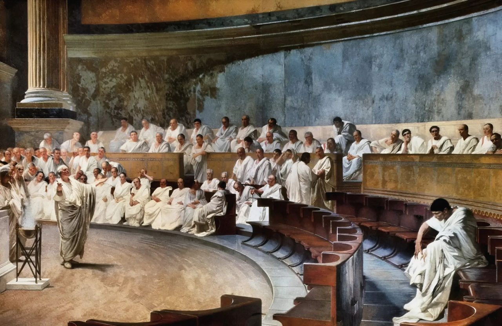
키케로의 카틸리나 탄핵 연설 · 체사레 마카리(Cesare Maccari, 1888). 옥타비우스가 태어난 BC 63년, 키케로는 원로원에서 「제1차 카틸리나 탄핵 연설」을 했다. "Quousque tandem abutere, Catilina, patientia nostra?" 카틸리나여, 우리의 인내를 언제까지 시험할 셈인가? 그 광장의 그림자 안에서 자란 한 아기가, 마지막에는 그 키케로를 추방자 명단에 올린다.
수에토니우스는 이 출산도 신화화한다. 아티아가 출산 직전 아폴로 신전에서 밤을 새우는 동안 잠든 그녀의 옆구리에 거대한 뱀 한 마리가 똬리를 틀었고, 그 자국이 그녀의 피부에 영원히 새겨졌다고 한다. 그래서 그녀가 낳은 아이는 사람의 아들이 아니라 아폴로의 아들이라는, 알렉산드로스 대왕의 어머니 올림피아스를 둘러싼 이야기와 한 자도 다르지 않은 이야기를 후세 사람들은 마련해주었다. 황제가 된 자에게는 신의 아버지가 필요한 법이었다.
이름의 두 번째 음 "투리누스"는 아버지가 일리리아의 반란 노예 부대를 토리(Thurii) 근처에서 격파한 공을 기념하는 별명이었다. 어린 시절 그는 이 이름으로 불렸다. 안토니우스가 훗날 정쟁의 한복판에서 "투리누스"라고 부르며 그의 출신을 비웃은 것은, 자신이 모욕하고 있는 그 시골 이름의 주인이 어떤 인간인지를 끝내 알지 못한 사람의 마지막 농담이었다.
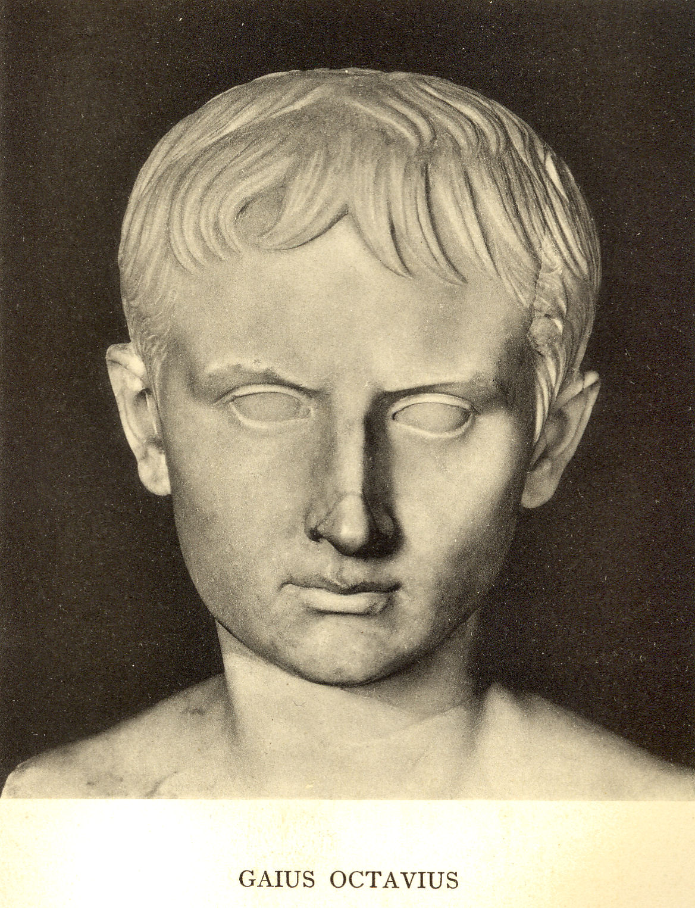
청년 옥타비우스 · 십대 시절의 옥타비우스로 추정되는 흉상. 후대의 아우구스투스 초상이 신격의 완벽함을 추구한 데 비해, 청년기의 그는 광대뼈가 도드라지고 신경이 예민해 보이는 얼굴이었다.
BC 59년, 옥타비우스가 네 살이 되던 해 아버지가 마케도니아에서 돌아오는 길에 갑작스레 사망했다. 사람들은 자연사라 했지만, 한 가문의 빛이 그렇게 어둠 속으로 한 발 들어선다. 어린 옥타비우스는 어머니 아티아와 외조부 마르쿠스 아티우스 발부스의 손에서 자랐고, 곧 어머니가 재혼한 의붓아버지 루키우스 마르키우스 필리푸스의 집으로 옮겨갔다. 필리푸스는 BC 56년의 집정관을 지낸 노련한 정치가였다. 그의 손에서 어린 옥타비우스는 로마 귀족 정치의 모든 결을 보고 자랐다.
몸은 약했다. 아우구스투스의 평생을 따라다닐 약점이 이 무렵 시작되었다. 만성적인 위장 장애, 알 수 없는 피부의 발진, 자주 도지는 기관지의 약함. 후대의 의사들은 그를 두고 "역사상 가장 자주 아픈 황제"라 평했다. 그러나 그 약함의 안쪽에서 영민함이 자랐다. 의붓아버지의 서재에서 그는 헬레니즘 시대의 산문과 그리스어 문법, 수사학을 익혔다.
그가 열두 살이 되던 해 BC 51년, 외할머니 율리아, 즉 카이사르의 누이가 사망했다. 그녀의 장례는 율리우스 가문의 큰 행사였고, 관례에 따라 가족 중 한 명이 추도 연설을 해야 했다. 그 자리를 어른 남자가 아닌 열두 살의 손자 옥타비우스가 맡았다. 광장 한복판에 마련된 연단에 오른 작은 소년이, 외할머니의 일생과 율리우스 가문의 영광을 침착한 라틴어로 풀어냈다. 그날 그 자리에 종조부 율리우스 카이사르가 있었다. 갈리아에서 돌아온 그가 누이의 장례를 위해 잠시 로마에 머무는 중이었다. 카이사르는 무대 위의 작은 친척을 처음 진짜로 들여다봤다. 어린아이의 떨림 없는 목소리, 정확한 발음, 적절한 절제. 그날 그 자리에서 백전노장은 한 가지를 결심했다. 이 아이를 잘 보아두어야 한다.
BC 45년 봄, 카이사르가 폼페이우스의 두 아들을 격파한 문다(Munda) 전투 직후, 열일곱 살의 옥타비우스가 폭풍을 뚫고 작은 배 한 척으로 막사에 도달했다. 일부 사료는 그가 적의 영토를 가로질러 도보로 카이사르의 진영에 닿았다고 적는다. 종조부가 그날 이후로 종손을 곁에서 떨어뜨려 두지 않았다고, 니콜라우스 다마스키누스는 적었다. 카이사르는 그해 가을 비밀리에 새 유언장을 작성했다. 그는 옥타비우스를 자신의 정식 양자(養子)이자 재산의 사분의 삼 상속자로 지명했다. 옥타비우스는 아직 그 사실을 몰랐다. 그는 다음해 봄의 파르티아 원정을 사전 학습하기 위해 그리스의 아폴로니아에 미리 보내져, 군단과 함께 야영하면서 그리스어와 수사학과 전술을 익히고 있었다.
곁가지 하나 — 수에토니우스가 새긴 한 사람의 몸 (『아우구스투스』 79–82)
그가 죽은 지 한 세기 뒤, 황실 비서관 수에토니우스는 황실 기록보관소를 뒤져 한 사람의 인간으로서의 몸을 끈질기게 적어냈다. 키는 그의 해방노예이자 기록관 율리우스 마라투스의 증언으로 다섯 자 일곱 치, 즉 약 168cm였다. 작은 편이었으나 비례가 좋아 옆에 키 큰 사람이 서지 않으면 알아채기 어려웠다 한다. 그는 그 작은 키를 굽 높은 신발(calceus altior)로 가렸다. 머리는 살짝 곱슬에 옅은 금빛이 도는 갈색. 눈썹은 미간에서 마주 붙었고, 코는 윗부분이 약간 솟았다가 끝이 살짝 안으로 굽었다. 치아는 "작고, 사이가 벌어졌고, 잘 관리되지 않았다(raros et exiguos et scabros)."
그러나 그가 평생 자랑한 한 가지는 눈이었다. "맑고 빛이 가득 차서, 그가 누구를 응시하면 그 사람은 마치 태양 앞에 선 듯 눈길을 내릴 수밖에 없었다." 그는 자기 눈에서 사람들이 신성을 보아 주기를 원했고, 그것이 보일 때 만족했다. 노년에는 왼쪽 눈의 시력이 거의 사라졌고, 같은 노년에 왼쪽 엉덩이와 무릎과 손이 차례로 류머티즘에 절었다. 한 사람의 자기 몸에 대한 그 끈질긴 자기 관리가 결국 한 도시의 자기 관리와 같은 종류의 일이라는 것을, 수에토니우스는 침착하게 기록했다.
곁가지 둘 — 뱀과 두 어머니
알렉산드로스의 어머니 올림피아스가 디오니소스의 뱀과 동침했다는 이야기와, 옥타비우스의 어머니 아티아가 아폴로의 뱀에게 표식을 받았다는 이야기는, 후자가 전자를 의도적으로 베낀 것이다. 옥타비우스가 자라며 알렉산드로스의 정복기에 빠져들고, 그를 평생의 거울로 삼은 결과, 그의 어머니까지 알렉산드로스의 어머니와 같은 신화를 입어야 했다. 권력은 다른 권력의 도상(圖像)을 빌려 입는다. 신의 어머니가 되는 일조차 그러했다.
로마 — 카틸리나의 해
옥타비우스가 태어난 그해 가을, 키케로는 카틸리나의 두 번째 음모를 분쇄했다. 12월 5일, 원로원 결의로 음모 가담자 다섯이 툴리아눔 지하 감방에서 교살되었다. 재판 없이. 그 결정이 8년 뒤 키케로 자신을 망명으로 내몰고, 20년 뒤에는 그의 목과 손을 광장에 매달게 한다.
파르티아 제국
이 무렵 동방의 강자는 아르사케스 왕조 파르티아. 대왕 프라아테스 3세가 통치 중이었다. 8년 뒤(BC 53년) 크라수스가 카르하이 전투에서 파르티아에 처참히 패하면서, 로마와 파르티아의 이백 년 대치가 시작된다.
유대
마카베오의 후예 하스몬 왕조가 내분으로 무너져, BC 63년 같은 해 폼페이우스가 예루살렘을 함락하고 성소(Holy of Holies)에 들어갔다. 한 세대 뒤 옥타비우스가 황제가 될 무렵, 유대는 헤로데 대왕의 손에 떨어진다. 또 한 세대가 지나면, 베들레헴에서 한 아기가 태어난다.
이집트
마지막 프톨레마이오스 왕조 시기. 프톨레마이오스 12세 아울레테스가 왕좌에 있었으며, 그의 딸, 당시 여섯 살의 이름은 클레오파트라였다. 서른 해 뒤 두 어린이는 지중해 양 끝에서 자라나, 알렉산드리아 항구에서 마주친다.
한(漢)나라
전한(前漢)의 선제(宣帝) 통치기. 흉노가 분열되어 호한야선우(呼韓邪單于)가 한에 입조하기 직전. 옥타비우스가 자랄 동안 한나라는 서역도호부를 두어 비단길의 동쪽을 처음으로 안정시키고 있었다. 로마와 동방의 첫 간접 무역망이 형성되던 시기다.
II
BC 44년 3월 · 그리스 아폴로니아 → 이탈리아
3월의 이데스 — 아폴로니아에서 받은 유언장
강의 듣기
그날, 로마의 폼페이우스 극장 회랑에서 스물세 번의 칼이 한 사람의 몸으로 들어갔다. 며칠 뒤, 한 어린 청년이 아드리아 해의 동쪽 도시에서 그 소식을 받았다. 동시에 그가 새로 살아야 할 이름도.
BC 44년 3월 15일, "3월의 이데스(Idūs Martiae)". 카이사르가 원로원 회의에 가는 길에 폼페이우스 극장 부속 회랑에서 예순 명의 음모자에게 둘러싸여 살해되었다. 마지막 칼이 옛 친구이자 사생아라는 소문까지 있던 브루투스의 것이었다는 것이, "Et tu, Brute?"라는 후대의 각색을 낳았다. 카이사르가 실제로 한 말은 그리스어였다는 설("καὶ σύ, τέκνον", 너마저, 아이야) 도 있다.
아폴로니아의 옥타비우스에게 소식이 닿은 것은 며칠 뒤였다. 어머니의 첫 편지는 이러했다. "로마로 돌아오지 말라. 너는 카이사르의 후계자다. 그러므로 너도 표적이다." 그러나 같은 편지가 다른 사실도 전했다. 그는 이제 카이사르의 양자다. 정식 유언장이 베스타 신녀들의 신전에서 개봉되었고, 가이우스 옥타비우스는 그 자리에서 가이우스 율리우스 카이사르 옥타비아누스(Gaius Julius Caesar Octavianus)가 되었다. 라틴어 명명법에서 양자는 양아버지의 이름을 받고 자신의 본래 가문을 형용사형으로 바꾼 별명에 단다. 그는 이제 카이사르였다.
그는 어머니의 만류를 거스르고 이탈리아로 향했다. 브룬디시움(현 브린디시) 항구에 닿았을 때, 그곳에 주둔하던 군단들이 일제히 그를 "카이사르(Caesar)"라 환호했다. 그 호칭 한 단어가 그가 가진 모든 것이자, 그가 앞으로 가질 모든 것의 시작이었다. 열여덟 살이었다. 그는 자기를 단 한 번도 옥타비아누스라 부르지 않았다. 그는 카이사르였고, 그것이 그의 첫 정치 행위였다.
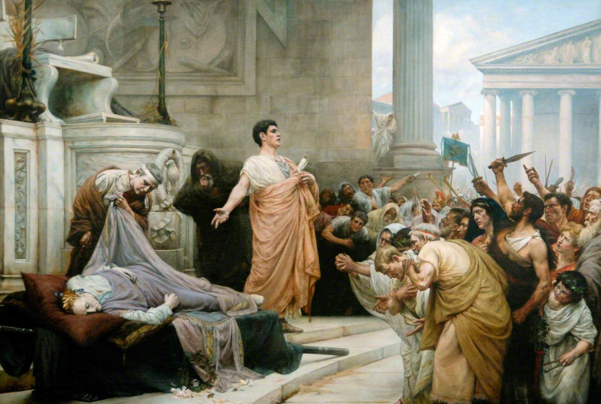
카이사르 장례식에서의 마르쿠스 안토니우스 · 조지 에드워드 로버트슨. 카이사르의 시신 옆에서 안토니우스가 펼친 추도사가 군중을 격분시켜 음모자들을 로마에서 쫓아낸 그 연설은, 후에 셰익스피어의 「줄리어스 시저」에서 영생을 얻는다. 옥타비아누스는 그 자리에 없었다. 그러나 그 연설이 만든 정치적 공기를 그는 평생 이용할 줄 알았다.
로마에는 이미 또 다른 카이사르의 후계자가 있었다. 카이사르의 부장이자 동지였던 마르쿠스 안토니우스(Marcus Antonius). 카이사르 사후 그는 카이사르의 모든 문서, 모든 재산, 모든 권력의 실질적 상속자처럼 행동했다. 열여덟 살의 옥타비아누스가 그를 찾아가 자기 양아버지의 유산 분배를 청하자, 안토니우스는 그를 비웃었다. "어린 친구, 카이사르의 이름은 무거운 짐이다. 자네가 그것을 견딜 만큼 어른인가?"
옥타비아누스의 답은 한 가지였다. 그는 자기 양아버지의 사재(私財)와 어머니 가문의 재산을 모조리 풀어, 카이사르가 죽기 전 로마 시민 한 사람당 약속했던 칠십오 데나리우스를 자비로 지급했다. 그는 이름을 산 것이 아니라, 이름을 사실로 만들었다. 카이사르의 군단병들이 그를 진짜 후계자로 인정하기 시작했다. 안토니우스는 그 다음에야 위협을 알아보았다. 그러나 이미 늦었다.
곁가지 셋 — 키케로의 잔인한 농담
옥타비아누스를 정치적 도구로 쓰려 했던 늙은 키케로는 친구들에게 보낸 편지에서 농담조로 적었다. "laudandum, ornandum, tollendum". 그 어린 청년을 칭찬하고(laudandum), 영예롭게 만들고(ornandum), 그 다음에 들어 옮겨야(tollendum) 한다. 라틴어의 tollere는 "들어 올리다"와 "제거하다(죽이다)" 두 뜻을 동시에 가졌다. 키케로 본인은 이 농담이 옥타비아누스의 귀에 들어갈 줄 몰랐다. 그러나 들어갔다. 한 해 반 뒤 그 어린 청년이 키케로의 머리와 손을 광장에 매단다. 라틴어의 이중 의미를, 한쪽이 다른 쪽으로 응답했다.
곁가지 — 후계자 점지의 결정적 장면들
카이사르가 옥타비우스를 후계자로 점지한 이유에 대해 사료들은 세 장면을 꼽는다. 하나는 열두 살의 추도 연설, 침착한 라틴어. 둘은 열여섯 때 옥타비우스가 의붓아버지의 옷자락을 잡고 카이사르에게 가서 자기 친구를 구해달라고 청했을 때의 변호 솜씨. 셋은 문다 직후의 폭풍을 뚫고 막사에 도착한 그 모습. 세 번 모두 어린 친척의 꺾이지 않는 의지를 본 것이다. 카이사르 자신이 한 평생 자랑으로 삼은 그 자질이었다. 그에게는 다른 후계 후보들이 있었다. 안토니우스, 어쩌면 친아들로 여겨지던 브루투스, 이집트의 사생아 카이사리온. 후대인들이 "왜 안토니우스가 아니었나"를 묻을 때 답은 단순했다. 안토니우스는 카이사르를 닮았고, 옥타비우스는 카이사르가 되고 싶어했다.
이집트
같은 해 클레오파트라 7세는 이미 카이사르의 정부였고, 카이사르의 친아들이라 주장되는 카이사리온(Caesarion, 본명 프톨레마이오스 카이사르)은 세 살이었다. 카이사르가 죽자 클레오파트라는 곧장 이집트로 돌아갔고, 알렉산드리아에서 자식이 자라기를 기다렸다. 열네 해 뒤, 그 아이가 옥타비아누스에게 살해된다.
유대
이때 유대를 다스리는 자는 안티파테르(이두메아인). 그의 둘째 아들이 스물한 살의 헤로데. 다섯 해 뒤 헤로데는 안토니우스와 옥타비아누스의 사이에서 줄을 타며 유대 왕좌를 거머쥔다.
BC 43년 11월, 보노니아의 작은 강가 섬에서 세 사람이 사흘을 협상해 한 도시를 세 조각으로 나누었다. 옥타비아누스는 이탈리아의 심장을, 안토니우스는 갈리아와 동방의 부(富)를, 레피두스는 변두리의 두 속주를 받았다. 그러나 영토 분할보다 무서운 한 가지가 있었다. 추방자 명단(proscriptio). 머리에 현상금이 걸린 그 명단의 첫 줄에 키케로의 이름이 있었다.
III
BC 44–42년 · 무티나 · 보노니아 · 필리피
무티나와 필리피 — 키케로의 죽음
강의 듣기
안토니우스는 BC 44년 가을, 갈리아의 총독으로 부임하려 출발했다. 그러나 갈리아에는 이미 카이사르 살해자의 한 명인 데키무스 브루투스가 총독으로 있었고, 그가 임지를 비우기를 거부했다. 안토니우스는 그를 무티나(현 모데나)에서 포위했다. 키케로의 원로원은 이 기회를 보았다. 그들에게 안토니우스는 데키무스보다 더 큰 위협이었다. 그래서 그들은 묘한 결단을 내렸다. 카이사르의 양자, 열아홉 살의 옥타비아누스에게 임시 사령관(imperator)의 권한을 부여하고, 두 명의 집정관과 함께 안토니우스를 토벌하게 한 것이다.
두 집정관 히르티우스와 판사가 군대를 이끌었다. 옥타비아누스는 명목상의 동반 사령관이었다. BC 43년 4월, 무티나 인근의 두 전투에서 첫 번째 전투인 포룸 갈로룸에서 판사가 치명상을 입었다. 며칠 뒤 두 번째 전투인 무티나 본전에서 안토니우스의 군대가 후퇴했고, 그 자리에서 히르티우스도 전사했다. 두 집정관이 같은 주에 죽었다. 전장의 살아남은 최고 사령관은 열아홉 살의 청년이었다. 그는 두 집정관의 군대까지 자신의 휘하로 흡수했다. 사료(타키투스)는 옥타비아누스가 두 집정관의 죽음이 단순한 전사가 아닐 수 있다는 의심을 동시대인들에게 받았다고 적는다. 정황은 미묘했고, 후대인들은 그 죽음의 배후를 확정할 수 없다. 그러나 한 가지는 분명했다. 그가 이득을 보았다.
원로원은 그에게 두 집정관의 자리를 약속했었다. 그러나 안토니우스를 격파한 뒤 그들은 갑자기 옥타비아누스가 더 이상 필요하지 않다는 듯이 그를 외면했다. 그들은 데키무스 브루투스를 사령관으로 다시 세우고, 옥타비아누스에게 군대를 해산하라 명령했다. 열아홉 살의 청년은 답하지 않았다. 그는 여덟 개 군단을 이끌고 로마로 진군했다. 원로원은 떨었다. BC 43년 8월 19일, 그는 열아홉의 나이로, 법정 최저 연령보다 스물세 해 어린 채로 로마의 집정관이 되었다.
그해 가을, 옥타비아누스는 자신이 무티나에서 격파한 그 안토니우스와, 그리고 카이사르의 또 한 명의 옛 부장이자 대제관을 차지한 마르쿠스 아이밀리우스 레피두스와 만났다. 장소는 보노니아(현 볼로냐) 인근, 강 가운데의 작은 섬이었다. 세 사람은 무장한 호위를 강 양안에 두고 단 셋이서 사흘을 협상했다. 협상의 결과를 후대 사람들은 제2차 삼두정치(Second Triumvirate)라 부른다. 카이사르의 제1차 삼두정은 비공식 신사 협약이었으나 이번은 법률로 공식화된 "공화국 재정비를 위한 삼두(triumviri rei publicae constituendae)", 즉 다섯 해 임기의 합법적 독재 위원회였다.
섬에서 사흘간 이루어진 가장 무서운 일은 영토 분할이 아니었다. 추방자 명단(proscriptio)이었다. 술라가 한 세대 전 했던 그 명단의 재판(再版). 세 사람은 각자 자신의 정적 이름들을 가지고 와서 서로의 명단을 교환했다. 한 사람의 친구를 다른 사람의 적이 죽이는 협정. 명단에 오른 삼백 명의 원로원 의원, 이천 명의 기사. 머리에는 현상금이 걸렸다. 한 사람의 목당 이만 오천 데나리우스. 노예가 주인을 죽이면 노예에게 시민권과 만 데나리우스가 주어졌다.
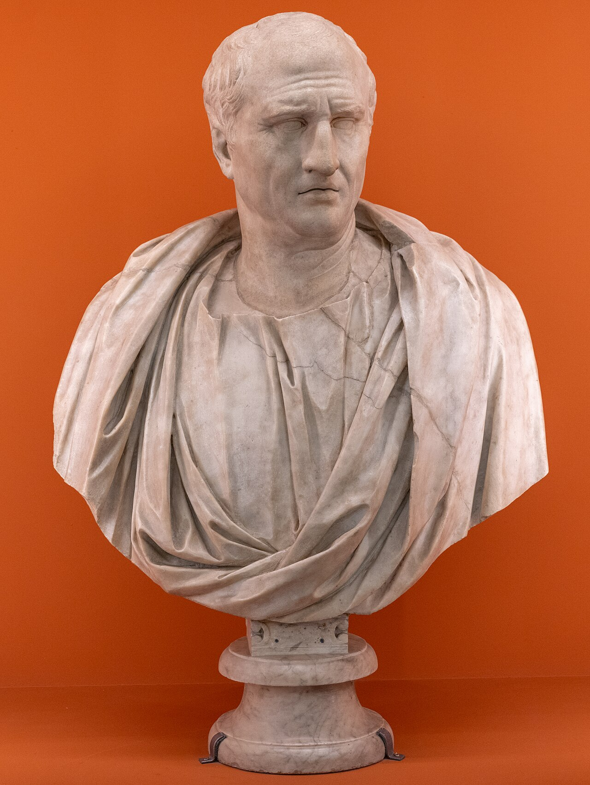
마르쿠스 툴리우스 키케로 · 카피톨리노 박물관. 옥타비아누스가 어렸을 때 키케로는 그를 "laudandum, ornandum, tollendum"이라 농담했다. BC 43년 가을, 그 농담의 마지막 단어가 키케로 자신에게 돌아왔다. 안토니우스가 그의 이름을 명단에 올리는 데에 옥타비아누스가 단 사흘의 침묵으로 동의했다.
명단의 첫 줄, 안토니우스가 무엇보다 원한 한 사람의 이름이 있었다. 마르쿠스 툴리우스 키케로. 키케로는 안토니우스를 열네 편의 「필리피카(Philippicae)」 연설로 정면 공격해온 사람이었다. 그 연설들은 데모스테네스가 마케도니아의 필리포스를 비난한 옛 연설의 이름을 빌려 "공화국의 마지막 자유의 목소리"가 되었다. 그러나 자유의 목소리는 권력의 칼을 이기지 못한다. 키케로는 자기를 보호해줄 줄 알았던 어린 카이사르가 자기를 팔았다는 것을, 명단을 보고서야 알았다.
키케로는 도주했다. 그의 시골 별장 포르미아이에서 가마에 실려 해안으로 가던 중, 안토니우스의 부하 백인대장 헤렌니우스가 따라잡았다. 키케로는 가마의 휘장을 걷고 목을 내밀었다. "잘 자르게나, 군인이여. 잘 자르라." 머리와, 그가 「필리피카」를 쓴 오른손이 함께 잘려 로마로 운반되었다. 안토니우스의 부인 풀비아(Fulvia)가 그 잘린 머리를 자기 무릎 위에 올려놓고, 머리핀으로 키케로의 혀를, 자신과 자기 남편을 공격했던 그 혀를 거듭 찔렀다고 카시우스 디오는 전한다. 그 다음 머리와 손은 키케로가 평생 자기 연설로 군중을 흔들었던 광장의 연단(rostra)에 매달렸다.
옥타비아누스가 키케로의 이름이 명단에 오르는 것을 사흘간 막다가 결국 받아들였다는 사실은, 후대의 모든 그의 옹호자들도 부인하지 못하는 그의 도덕적 빚이다. 플루타르코스는 옥타비아누스가 황제가 된 노년에 손주가 키케로의 책을 읽다가 황급히 숨기는 것을 보고 한참을 침묵하다 말했다고 전한다. "박학한 사람이었지, 아이야. 박학한 사람이었지, 그리고 자기 조국을 사랑한 사람이었다."
카이사르의 살해자 두 사람, 마르쿠스 브루투스와 가이우스 카시우스가 마침내 군대를 정비했다. 그들은 아시아 속주와 시리아에서 자금을 거두어 열아홉 개 군단을 모았고, 트라키아의 필리피 평원, 알렉산드로스의 아버지 필리포스가 자기 이름으로 세운 그 도시의 동쪽 언덕에 진을 쳤다. 안토니우스와 옥타비아누스가 스물여덟 개 군단으로 마주 섰다.
전투는 두 번으로 갈렸다. 10월 3일경의 제1차 필리피에서 안토니우스가 카시우스의 진영을 격파했다. 그러나 같은 날 같은 시각, 평원의 다른 쪽에서는 브루투스가 옥타비아누스의 진영을 무너뜨리고 그의 막사까지 들어갔다. 옥타비아누스는 마침 그날 병으로 막사에 누워 있어야 했지만, 의사가 꿈에서 위험을 경고했다며 그를 막사 밖으로 옮겨놓았다. 막사로 돌격해온 브루투스의 병사들은 빈 침대를 찔렀다. 그는 늪지대의 갈대밭에 몸을 숨겨 살아남았다. 카시우스는 다른 진의 패전을 모르고 자기 진영의 패전만을 본 채, 안토니우스의 기병대가 자기 진영의 짐을 약탈하는 것을 적의 본진 함락으로 잘못 알고 그날 노예에게 자기 목을 베게 했다. 사료는 카시우스의 자결을 "역사상 가장 무익한 자결"이라 기록한다.
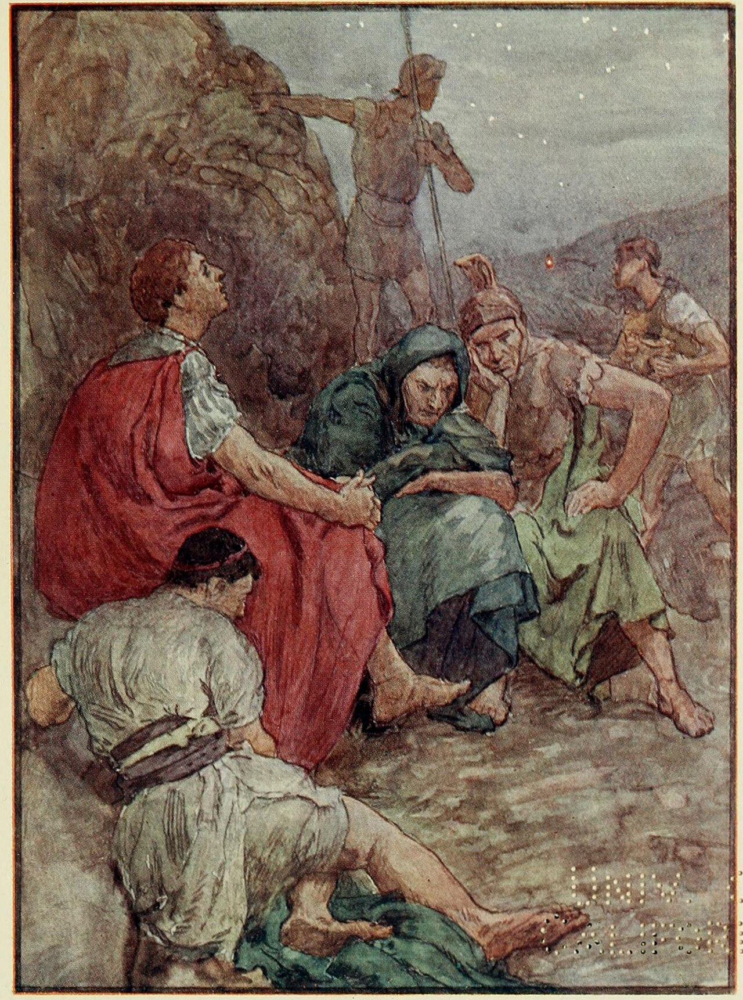
필리피 전투 후의 브루투스 · 19세기 회화. 두 번째 전투에서 패한 브루투스가 동료들과 함께 마지막을 준비하는 모습. 그는 친구 스트라토에게 자기 칼끝을 잡아달라 청하고, 그 위에 몸을 던졌다.
10월 23일경의 제2차 필리피에서 브루투스는 진지에서 시간을 끌면 적의 보급이 끊어진다는 정공법을 택했지만, 자기 진영의 부하들이 결전을 요구했다. 마지못해 평원에 내려간 그의 군대는 안토니우스와 옥타비아누스의 본대에 짓밟혔다. 브루투스는 가까운 친구 네 명만 데리고 도주했다가 다음 날 새벽 자결했다. 두 살해자가 죽었다. 카이사르의 복수가 완성되었다. 옥타비아누스는 막사 밖에서 살아남은 그 청년은 이 전투에서 거의 군사적 역할을 하지 않았다. 안토니우스가 모든 결정을 내렸고 모든 결정타를 안겼다. 그러나 옥타비아누스는 이름의 무게로 그 승리의 절반을 가져갔다. 카이사르의 살해자들을 죽인 자라는 정치적 자본이 그날부터 그의 것이었다. 스물둘이었다.
곁가지 — 살해자들의 머리
브루투스의 시신은 안토니우스가 자기 자줏빛 망토로 덮어 정중히 화장해주었다. 그러나 옥타비아누스는 머리를 잘라 로마로 보내, 카이사르의 동상 발치에 던지라 명령했다. 시신을 실은 배는 도중에 풍랑을 만났고 머리는 바다에 잃어버렸다. 후대인들은 이를 두고 신들이 옥타비아누스의 잔인함을 견디지 못해 시신을 바다로 거두었다 적었다. 승리 직후 안토니우스가 동방을 맡기로, 옥타비아누스가 이탈리아와 서방을 맡기로 합의했다. 안토니우스는 후한 거래라 여겼다. 그가 잘못 본 것은 가난한 이탈리아의 가난한 군대가, 부유한 동방의 부유한 군대보다 더 무서운 군대가 될 수 있다는 사실이었다.
곁가지 — 첫 진군, 그리고 첫 거짓말
옥타비아누스가 로마로 진군한 일은 그가 평생 부인하게 되는 첫 정치 행위였다. 그의 「행적록(Res Gestae Divi Augusti)」의 첫 문장은 이렇게 시작한다. "annos undeviginti natus exercitum privato consilio et privata impensa comparavi." 열아홉의 나이에 나는 사사로운 결단과 사사로운 비용으로 군대를 일으켜, 노예가 된 공화국을 자유롭게 했다. 그러나 그는 "내가 여덟 개 군단으로 원로원을 위협해 집정관 자리를 빼앗았다"고 적지 않는다. 권력자의 자서전이 항상 그렇듯 그 책의 진짜 메시지는 그가 적지 않은 것에 있다.
이집트
필리피의 같은 해 가을, 안토니우스는 동방 정리를 위해 타르수스(소아시아)로 갔다. 그는 클레오파트라 7세를 그 도시로 소환해 카이사르 살해 음모에 자금을 댄 혐의를 조사하려 했다. 클레오파트라가 황금 갤리선에 아프로디테처럼 차려입고 등장한 그 첫 만남이 열한 해 뒤 악티움의 운명을 잉태했다.
로마 · 키케로의 친구들
키케로의 친구이자 부유한 출판업자 아티쿠스는 모든 명단의 양쪽에서 살아남았다. 그는 옥타비아누스와 안토니우스 양쪽 모두와 친분을 유지했고, 그의 가문은 후에 아우구스투스의 후계자 티베리우스의 어머니 리비아의 의붓딸 빕사니아의 어머니가 된다. 키케로의 친구는 죽었으나, 키케로의 친구의 친구는 다음 황제의 외할아버지가 되었다. 그렇게 로마의 명문은 살아남았다.
IV
BC 41–40년 · 페루지아 · 브룬디시움
페루지아의 굶주림 — 안토니우스와의 균열
강의 듣기
필리피의 노병 십칠만 명에게 옥타비아누스는 약속한 농지를 주어야 했다. 그는 이탈리아 열여덟 개 도시의 토지를 강제 수용해 분배했다. 토지를 빼앗긴 이탈리아 농민들, 그 중 한 명이 베르길리우스의 아버지였다. 그 분노가 폭발했고, 그 분노를 안토니우스의 부인 풀비아와 안토니우스의 동생 루키우스 안토니우스가 자기 가족의 정치 자산으로 이용했다. BC 41년, 두 사람은 옥타비아누스에 맞서 봉기했다. 페루지아 전쟁(Bellum Perusinum)이었다.
옥타비아누스는 그의 가장 큰 강점인 친구 마르쿠스 빕사니우스 아그리파(Marcus Vipsanius Agrippa)와 함께 페루지아(현 페루자)를 포위했다. 아그리파는 옥타비아누스의 동갑(BC 63년생), 아폴로니아에서 함께 공부하던 그 청년. 옥타비아누스가 모든 군사적 결정을 맡길 수 있는 단 한 사람의 친구. 그가 페루지아를 굶주림으로 함락시켰다. 도시 안의 시민들은 마지막에 풀잎과 가죽을 먹었다. 발굴된 그 시기의 투석탄에는 옥타비아누스의 추잡한 욕설과 풀비아의 신체를 비하하는 문구가 새겨져 있다. 욕설을 쓴 청동알들이 도시 안으로 날아갔다.
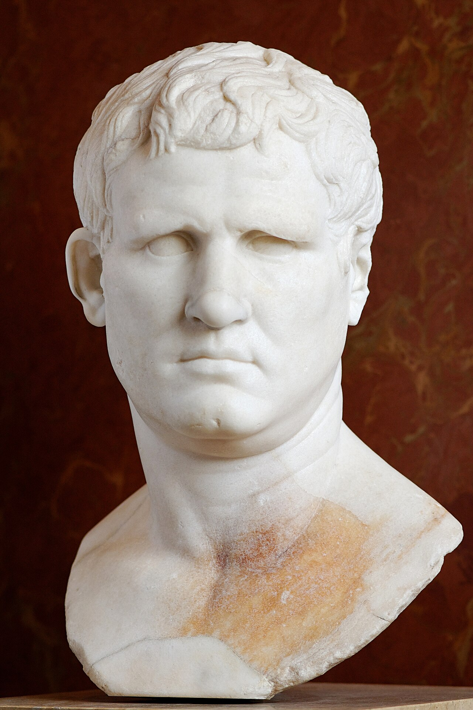
마르쿠스 빕사니우스 아그리파 · 루브르 박물관. 옥타비아누스의 평생의 친구이자 모든 전투의 실제 사령관. 옥타비아누스가 황제가 된 뒤 후계자로 점찍었다가, 자기 딸과 결혼시켰다가, 그가 먼저 죽자 그를 잃은 슬픔을 평생 견뎌야 했던 단 한 사람.
BC 40년 봄에 페루지아가 함락되었다. 옥타비아누스는 도시의 원로원 의원 삼백 명을 카이사르 살해 삼주기에 카이사르의 신단(神壇) 앞에서 인신공양처럼 처형했다고 일부 사료(수에토니우스)는 전한다. 다른 사료는 이를 부인한다. 진위는 불분명하나 페루지아 전체가 약탈된 뒤 불태워졌다는 사실은 일치한다. 풀비아는 그리스로 도주했다가 그 해 안에 병사했고, 루키우스 안토니우스는 항복했다.
그 사이 안토니우스는 동방에서 클레오파트라와 알렉산드리아의 겨울을 보내고 있었다. 그의 부인이 자기 동생과 함께 일으킨 전쟁이 자기도 모르는 사이 끝났다는 소식을 그는 늦게 들었다. 안토니우스는 군대를 끌고 브룬디시움 항구에 들이닥쳤다. 옥타비아누스가 그곳으로 갔다. 두 사람의 군대가 마주 섰다. 그러나 양쪽 군대의 병사들이 서로를 알아보았다. 필리피의 동료들이었다. 그들은 더는 싸우려 하지 않았다. 명령보다 큰 침묵이 항구를 덮었다.
그 침묵이 브룬디시움 협정(BC 40년 가을)을 낳았다. 안토니우스가 동방을, 옥타비아누스가 서방을, 레피두스가 아프리카를 다스리는 것으로 다시 영토를 분할했다. 그리고 정치적 안정을 위해 안토니우스가 옥타비아누스의 누이 옥타비아(Octavia)와 결혼했다. 옥타비아는 풀비아 사망 직후 막 과부가 된, 옥타비아누스가 누구보다 아끼는 누이였다. 정략결혼의 가장 잔인한 형태였지만 옥타비아는 그것을 자기 의무로 받아들였다.
곁가지 — 베르길리우스, 토지를 빼앗긴 농부의 아들
BC 41년의 토지 몰수령으로 만토바 인근의 한 농가가 재산을 잃었다. 그 농가의 아들, 서른 살의 시인 푸블리우스 베르길리우스 마로(Vergilius Maro)가 후원자 마이케나스를 통해 옥타비아누스를 만났다. 옥타비아누스는 시인의 가족 농지를 일부 돌려주었고, 베르길리우스는 그 답례로 「목가(Eclogae)」 1편의 첫 시를 그에게 헌정했다. "O Meliboee, deus nobis haec otia fecit." 오 멜리보이여, 한 신이 우리에게 이 여유를 주었노라. 토지를 빼앗은 자가 토지의 일부를 돌려주고, 그 답례로 시인이 그를 신으로 칭송한 첫 시가 그렇게 쓰였다. 시인이 황제의 자리에 새긴 첫 도금이었다. 스물두 해 뒤 그 시인은 「아이네이스」로 황제의 신화를 완성한다.
곁가지 — 옥타비아누스의 음담 시 한 편
이 무렵 옥타비아누스가 안토니우스의 정부였던 카파도키아 여인 글라피라를 두고 쓴 외설적 풍자시 한 편이 후대 시인 마르티알리스에 의해 단편으로 전해진다. 두 행만 인용한다. "quod futuit Glaphyran Antonius, hanc mihi poenam / Fulvia constituit, se quoque uti futuam." 안토니우스가 글라피라와 통정한 벌로, 풀비아가 내게 자기와도 통정하라 한다. 시는 풀비아가 자기를 거부한 옥타비아누스에게 분노해 페루지아 전쟁을 일으켰다는 가설을 그가 직접 시로 제출한 것이었다. 평소의 차분한 정치인의 입에서 단 한 번 새어나온 분노. 그가 안토니우스 부부를 정말로 얼마나 미워했는지, 그 두 행이 보여준다.
파르티아
BC 40년, 안토니우스가 이탈리아에 있는 동안 파르티아군이 시리아·소아시아로 침공해 안토니우스의 부장 데키디우스 삭사를 죽이고 시리아를 거의 차지했다. 동방의 위협은 안토니우스에게 본업이었다. 그가 브룬디시움 협정 뒤 서둘러 동방으로 돌아간 이유 중 하나도 이 위협이었다.
유대
같은 BC 40년, 파르티아의 후원을 받은 안티고노스가 예루살렘에 입성해 하스몬 왕조 마지막 자가 되었다. 안토니우스의 보호 아래 도주한 청년 헤로데가 같은 해 가을 로마로 가서 원로원으로부터 "유대의 왕"으로 정식 임명되었다. 한 외국인이 안토니우스와 옥타비아누스 두 정적이 일치하여 한 민족의 왕좌를 받은 드문 사례였다.
V
BC 39–36년 · 미세눔 · 로마 · 시칠리아
미세눔과 옥타비아 — 그리고 리비아
강의 듣기
지중해 서부에서 한 문제가 옥타비아누스를 다섯 해 동안 괴롭혔다. 섹스투스 폼페이우스. 카이사르의 옛 적 폼페이우스의 아들로, 시칠리아와 사르데냐를 거점으로 강력한 함대를 이끌고 로마의 곡물 보급을 봉쇄하고 있었다. 로마 시내에 빵의 가격이 폭등하고 폭동이 잦았다. BC 39년, 삼두는 그와 협상해야 했다. 캄파니아의 미세눔(현 미세노) 항구에서 옥타비아누스, 안토니우스, 섹스투스가 한 갤리선 위에 모여 만찬을 했다. 미세눔 협약(Pactum Misenum). 섹스투스는 한 해 동안 봉쇄를 풀고, 그 대가로 시칠리아와 사르데냐를 그의 합법적 영지로 인정받았다.
만찬 중에 섹스투스의 부장 메나스가 그에게 속삭였다고 한다. "닻줄을 끊으십시오. 그러면 당신은 오늘 저녁 한 식탁 위에서 세 사람의 적을 한꺼번에 제거하고, 지중해의 주인이 됩니다." 섹스투스의 답이 사료(아피아노스)에 전한다. "왜 미리 말하지 않았는가? 이제 약속을 했으니 끊을 수 없다." 그가 그날 닻줄을 끊었다면 로마사는 어떻게 흘렀을까. 후대인이 자주 떠올리는 가정이다.
옥타비아누스에게는 이미 두 번의 정략결혼이 있었다. 첫 부인 클로디아 풀크라(풀비아의 딸)와는 사실혼 단계에서 풀비아 사건 직후 이혼했고, 두 번째 부인 스크리보니아는 그의 정적 섹스투스 폼페이우스의 인척으로 한 명의 딸 율리아를 낳자마자 같은 날 이혼당했다. "성격이 견딜 수 없다"는 이유였다. 진짜 이유는 다른 곳에 있었다.
BC 39년 어느 만찬에서 옥타비아누스는 한 여인을 보았다. 열아홉 살, 클라우디우스 가문, 로마에서 율리우스 가문만큼 오래된 명문의 딸. 이미 한 살 된 아들을 두고 있고, 둘째를 임신 중인 유부녀. 이름은 리비아 드루실라(Livia Drusilla). 남편 티베리우스 클라우디우스 네로는 카이사르 살해자 진영에 가담한 적 있는 옥타비아누스의 옛 적이었다.
옥타비아누스의 결정은 무거웠다. 그는 리비아의 남편에게 그녀를 임신한 채로 자기에게 양도하라 요청했다. 클라우디우스 네로는 거부할 처지가 아니었다. 그는 리비아를 자기 손으로 옥타비아누스에게 인도했고, 결혼식의 신부 아버지 역할까지 맡았다. BC 38년 1월 17일, 옥타비아누스는 스물넷, 리비아는 열아홉, 그녀의 뱃속에는 전남편의 아이가 여섯 달의 만삭으로 자라고 있었다. 결혼식 사흘 뒤 그녀는 둘째 아들을 낳았고, 그 아이는 친아버지의 집으로 보내졌다. 그 아이의 이름이 네로 클라우디우스 드루수스다. 리비아의 첫 아들의 이름은 티베리우스. 그가 아우구스투스의 후계자가 된다.
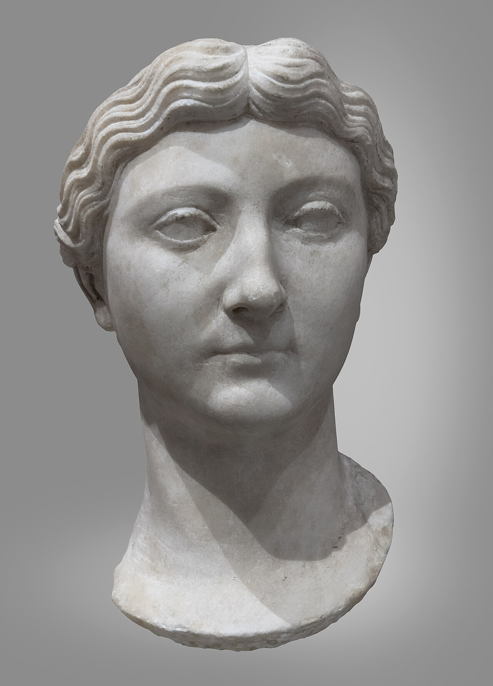
리비아 드루실라 · 툴루즈 생레몽 박물관 소장. 열아홉에 옥타비아누스에게 인도되었고, 쉰한 해를 그의 곁에서 살았다. 카시우스 디오의 평가는 이러하다. "그녀는 자기 남편을 완벽히 다스렸지만, 자기 남편이 자기를 다스리고 있다고 느끼게 했다." 로마 황실의 첫 황후이자, 마지막까지 유일한 황후였다.
BC 36년 9월 3일, 시칠리아 북쪽 해안 나울로쿠스(Naulochus) 앞바다에서 아그리파의 함대가 섹스투스 폼페이우스의 함대를 격파했다. 아그리파가 발명한 신무기 하르팍스(harpax), 카타풀트로 발사되는 갈고리 작살이 적함을 한 척씩 끌어당겨 부수었다. 섹스투스는 동방으로 도주했다가 다음해 안토니우스의 부장에게 처형되었다.
전투 직후, 삼두의 셋째 레피두스가 아프리카에서 스무 개 군단을 끌고와 시칠리아의 항복을 자기 이름으로 받아들이고는 시칠리아의 모든 영토를 자기 것으로 선포했다. 옥타비아누스에 대한 정면 도전이었다. 옥타비아누스는 군대 하나 없이 호위병 몇만 데리고 레피두스의 진영으로 걸어 들어갔다. 그가 그곳에서 한 일은, 자기 양아버지 카이사르의 자줏빛 망토를 입은 채 레피두스의 군단병들 앞에 서서 한 마디씩 그들에게 말을 거는 것이었다. 군단병들은 카이사르의 망토 앞에서 한 명 또 한 명 옥타비아누스 쪽으로 넘어왔다. 한 시간이 채 못 되어 레피두스는 자기 군대 없는 사령관이 되어 있었다. 옥타비아누스는 그를 죽이지 않았다. 대신 그의 정치적 권력을 모두 박탈하고, 단 하나의 직위 종신 대제관(Pontifex Maximus)만 남겨, 그를 라티움의 한 시골 별장에 사실상 가택 연금했다. 레피두스는 그곳에서 스물네 해를 더 정치 없는 노인으로 살다가 BC 12년에 죽었다. 그제서야 옥타비아누스는 그의 대제관 자리를 자신이 이어받았다. 삼두정은 둘이 되었다.
곁가지 — 아그리파, 황제의 그림자
옥타비아누스의 모든 군사적 승리에는 거의 예외 없이 아그리파의 이름이 있었다. 무티나, 페루지아, 나울로쿠스, 그리고 곧 다가올 악티움. 후대인들은 옥타비아누스가 황제가 되어 평생 동지를 옆에 둘 수 있었던 행운에 대해 두 가지를 적었다. 첫째, 아그리파가 절대로 옥타비아누스를 배신하지 않았다는 사실. 둘째, 그가 옥타비아누스가 그를 황제의 자리 옆으로 끌어올린 뒤에도 자신이 두 번째라는 것을 끝까지 받아들였다는 사실. 아그리파는 옥타비아누스의 외동딸 율리아와 결혼해 다섯 아이를 두었다. 그가 BC 12년에 죽었을 때 옥타비아누스는 자기 영묘에 그를 자기 옆 자리에 함께 묻었다.
곁가지 — 클라우디우스 가문이라는 이름의 무게
리비아의 가문 클라우디우스(Claudii)는 로마 전승에 따르면 BC 504년 사비니 부족의 한 우두머리 아투스 클라우수스가 로마로 망명해 세운 가문이었다. 율리우스 가문이 트로이의 아이네아스를 시조로 삼는다면, 클라우디우스 가문은 사비니의 토착 영웅을 시조로 삼았다. 두 가문은 로마사 오백 년 내내 라이벌이었다. 그 라이벌이 옥타비아누스의 결혼으로 한 침실에서 합쳐졌다. 그래서 후의 황제들은 모두 "율리우스-클라우디우스 왕조(Julio-Claudian Dynasty)"로 묶인다.
안토니우스의 동방 원정
옥타비아누스가 시칠리아와 레피두스를 정리하던 BC 36년, 안토니우스는 동방에서 파르티아 원정을 감행했다. 십만의 보병과 만의 기병을 끌고 메디아로 진군했다가 결정적 패배를 당하고, 약 사만의 병사를 잃은 채 시리아로 후퇴했다. 그가 동방에서 잃은 군대와, 옥타비아누스가 서방에서 얻은 자리가 두 사람의 운명을 그때 갈랐다. 안토니우스는 패배의 위로를 클레오파트라의 알렉산드리아에서 찾았다. 그가 그곳에서 보낸 다음 한 해가 그의 정치적 종언이 된다.
Tabula II · Anno XXXI a.C.n. — Bellum Actiacum
BC 31년 — 악티움 직전의 두 세계
옥타비아누스의 서방 (스물여덟 군단)안토니우스의 동방 + 이집트함대 진로 악티움 해전
한 도시가 두 개의 큰 자석으로 갈렸다. 서방의 가난한 라틴어 도시들이 옥타비아누스의 자석에, 동방의 부유한 그리스어 도시들과 이집트의 황금이 안토니우스의 자석에 끌렸다. 어느 쪽이 더 무거운 자석인지를 한 시인이 미리 알았다 — 호라티우스가 그 시인이었다. "Nunc est bibendum", 이제 마실 때, 자유로운 발로 땅을 구를 때. 안토니우스가 동방의 황금을 가졌지만, 그 황금에는 발이 없었다.
VI
BC 31년 9월 2일 · 그리스 서해안 악티움
악티움 — 한 여왕이 돛을 돌리던 오후
강의 듣기
한 해 전, 옥타비아누스는 베스타 신녀들의 신성한 봉인을 손으로 뜯었다. 안토니우스의 유언장이 그 안에 있었다. 로마법을 정면 위반한 그 한 행동이 한 사람의 정치적 죽음을 결정했다.
BC 34년 가을, 안토니우스가 알렉산드리아의 김나시온 광장에 황금 옥좌 두 개를 마련하고 자기와 클레오파트라가 앉았다. 발아래에는 그들의 자식 셋과 카이사르의 아들 카이사리온이 배석했다. 그는 모인 알렉산드리아 시민들 앞에서 「알렉산드리아 증여(Donationes Alexandriae)」를 선포했다. 클레오파트라는 "왕들의 여왕", 카이사리온은 "왕들의 왕"이며 카이사르의 진짜 친아들이자 합법적 후계자이다. 안토니우스와 클레오파트라 사이의 세 자식 알렉산드로스 헬리오스, 클레오파트라 셀레네, 프톨레마이오스 필라델포스에게 각각 아르메니아·메디아·파르티아, 키레네·리비아, 시리아·페니키아·킬리키아의 왕좌를 분여했다.
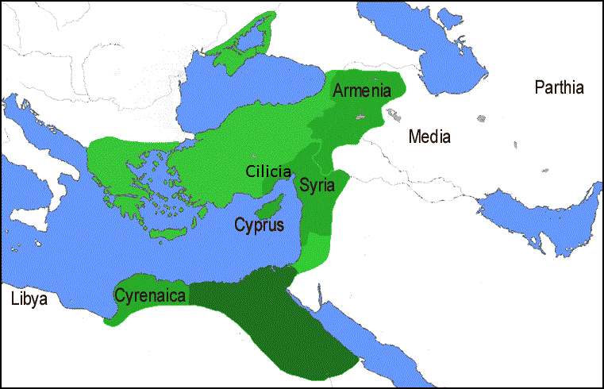
알렉산드리아 증여, BC 34년 · 동방의 절반이 한 가족의 자식들에게 분배되었다. 로마의 권력 분할 원칙, 아무도 자기 가족에게 속주를 주지 않는다의 정면 위반이었다.
로마에서 옥타비아누스가 이 소식을 들었을 때, 그는 정치적으로 한 해를 기다렸다. 안토니우스가 더 깊이 빠지기를 기다렸다. 정보망의 핵심에 한 사람이 있었다. 안토니우스의 측근이었다가 옥타비아누스 쪽으로 망명한 플란쿠스(Plancus). 그가 옥타비아누스에게 결정적 정보 한 가지를 누설했다. 안토니우스의 유언장이 로마의 베스타 신녀들이 지키는 신전에 봉인되어 있다는 것. BC 32년, 옥타비아누스는 로마법을 정면 위반하여 베스타 신녀들에게 그 유언장을 강제로 빼앗았다. 그는 원로원과 시민들 앞에서 안토니우스의 유언장을 큰 소리로 읽었다.
유언장의 내용은 충격이었다. 안토니우스는 자기 시신을 로마가 아닌 알렉산드리아의 클레오파트라 옆에 묻으라 명령했다. 그는 자기 재산의 절반을 클레오파트라의 자식들에게 상속했다. 그는 카이사리온이 카이사르의 친자라는 것을 다시 확인했다. 로마 시민들의 분노가 폭발했다. 한 로마인이 동방의 여왕에게 자기 도시와 자기 가족을 등지고 팔렸다는 것이 그들의 결론이었다. 원로원이 안토니우스의 모든 직위를 박탈했고, 이집트의 클레오파트라에게 전쟁을 선포했다. 안토니우스에게가 아니라 클레오파트라에게. 동방의 여왕에 대한 외전(外戰)으로 로마인끼리의 내전이 아니라 옥타비아누스의 전쟁이 정당화되었다.
BC 31년 봄, 안토니우스와 클레오파트라는 그리스 서해안 악티움(Actium)의 만(灣) 안쪽에 함대와 군대를 결집했다. 약 이백삼십 척의 거대한 갤리선, 십만의 보병 만 이천의 기병. 옥타비아누스와 아그리파의 군대는 동수의 보병과 더 가벼운 이백오십 척의 함대. 양측은 두 달간 만 입구에서 서로를 봉쇄한 채 노려보았다. 안토니우스의 진영에서 보급이 끊기고, 말라리아가 돌고, 노병들이 탈영하기 시작했다.
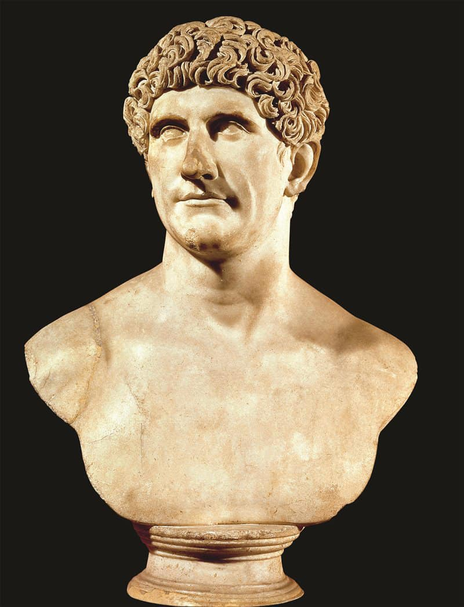
마르쿠스 안토니우스 · 바티칸 박물관. 둥근 얼굴, 굵은 목, 군인의 풍모. 카이사르가 가장 신뢰했던 부장이자 옥타비아누스가 가장 두려워했고 마침내 격파한 평생의 상대.
9월 2일, 안토니우스는 마침내 포위를 뚫고 외해(外海)로 빠져나가는 결단을 내렸다. 그의 거대한 갤리선들이 만 입구에서 아그리파의 가볍고 빠른 리부르나(liburna)와 부딪쳤다. 안토니우스의 함선들은 무겁고 견고했지만 느렸다. 아그리파의 작은 배들이 한 척씩 측면을 돌며 화살과 불을 쏟아부었다. 안토니우스의 좌익이 한 시간 만에 무너지기 시작했다.
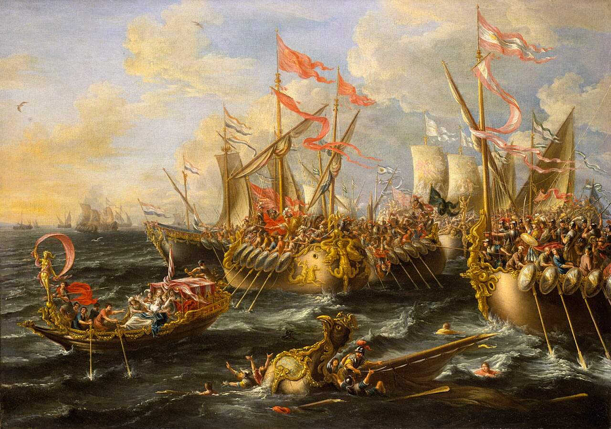
로렌초 카스트로, 「악티움 해전」 · 17세기 회화. 클레오파트라의 황금 갤리선(가운데)이 만의 입구에서 돛을 펴고 후퇴하는 순간. 안토니우스가 클레오파트라의 배를 보고는 자기 기함을 버리고 작은 배 한 척으로 그녀를 따라간다.
그 순간 클레오파트라의 예순 척 함대가 돛을 펴고 만에서 빠져나갔다. 그녀의 배에는 이집트의 황금 보고가 실려 있었다. 그녀는 후퇴를, 후일을 도모한 전략적 후퇴라 후대인은 풀이하지만, 패배의 신호로 만들었다. 안토니우스는 자기 함선과 자기 군대를 버리고 작은 다섯 사람 보트 한 척으로 옮겨 타 그녀의 배를 따라갔다. 그것이 안토니우스의 끝이었다. 지휘관을 잃은 안토니우스의 함대는 일부가 항복하고 일부가 침몰했다. 그날 저녁 옥타비아누스는 만의 입구에서 자기 군대의 함성을 듣고 있었다. 다음 날 아침 안토니우스의 육군이 사령관 없이 무리지어 항복했다. 한 시대가 만 입구에서 끝났다.
악티움 해전 도해 · 만의 입구를 봉쇄한 아그리파의 함대(파란색), 안의 안토니우스 함대(붉은색). 클레오파트라의 예순 척이 만 한가운데에서 돛을 펴 만 입구의 좁은 통로를 빠져나간 그 순간이 한 제국의 운명을 바꾸었다.
곁가지 — 호라티우스의 송가, 한 시인이 본 악티움
옥타비아누스의 후원 시인 호라티우스는 악티움의 승리를 두고 자신의 「송가 1권 37번」을 적었다. "Nunc est bibendum, nunc pede libero pulsanda tellus", 이제 마실 때, 이제 자유로운 발로 땅을 구를 때. 시는 클레오파트라를 로마에 끌고 와 모욕할 수도 있었던 한 마리 미친 여왕으로 그렸으나, 끝에 가서 그녀의 위엄을 인정했다. "non humilis mulier triumpho", 개선식에 끌려갈 천한 여자가 아니었다. 그녀가 결국 자살한 것은 호라티우스도 옥타비아누스도 자기들이 그녀에게 어떤 자긍심을 인정해주어야 한다는 것을 알게 만들었다.
곁가지 — 유언장의 진위
후대 사가들은 디오, 플루타르코스 모두 안토니우스의 유언장이 진본이었는지 확신하지 못했다. 일부 항목들은 특히 카이사리온의 친자 확인은 너무 정치적으로 옥타비아누스에게 유리해서, 유언장 자체가 위조되었을 가능성이 지속적으로 제기되었다. 옥타비아누스가 베스타 신녀들의 봉인을 직접 뜯은 것은 봉인이 한번 뜯어지면 그 안의 내용물의 진위를 누구도 확인할 수 없다는 사실까지 계산한 행동이었다. 정치는 도덕 위에 글을 쓰지 않고, 정치는 도덕을 다시 쓴다.
VII
BC 30년 8월 · 이집트 알렉산드리아
알렉산드리아 — 두 명의 카이사르는 없다
강의 듣기
악티움의 패배 후 안토니우스와 클레오파트라는 알렉산드리아의 왕궁에서 마지막 한 해를 보냈다. 안토니우스의 옛 군단들이 차례로 옥타비아누스에게 투항했다. BC 30년 7월말, 옥타비아누스가 이집트에 상륙했고 8월 1일 알렉산드리아에 입성했다.
안토니우스는 거짓 보고에 클레오파트라가 자결했다는 소식을 들었다. 그는 자기 검으로 자기 배를 찔렀다. 검은 치명상을 주었으나 즉사를 주지 않았다. 사료(플루타르코스)는 그가 부하들에게 끌려, 클레오파트라가 숨어 있던 영묘의 창으로 끌어올려져 그녀의 무릎 위에서 마지막 숨을 거두었다고 전한다. 마지막에 그가 한 말은 자기 영광을 기억해달라는 것이었다.
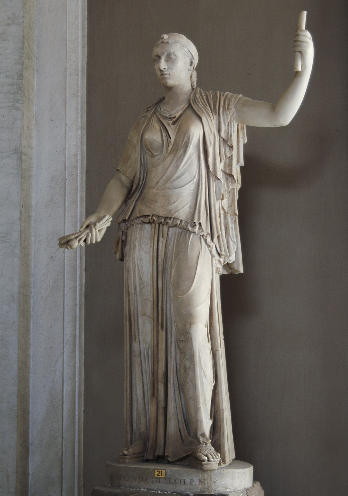
클레오파트라 7세 · 바티칸 박물관 소장. 후대인들이 그린 그녀의 미모가 어떤 것이었는지 사료들이 다르나, 플루타르코스는 그녀의 진짜 매력이 모습이 아니라 목소리였다고 적었다. 그녀는 아홉 개 언어를 통역 없이 구사한 마지막 프톨레마이오스였다.
옥타비아누스는 그녀를 살려두고 싶었다. 그녀를 로마로 끌고가 자신의 개선식의 정점으로 삼고 싶었다. 그는 그녀를 호위 아래 두고 그러나 그녀가 자살할 모든 도구를 빼앗았다. 그러나 마지막 면담에서 그녀는 자기를 로마로 끌고갈 그의 의도를 그의 눈에서 읽었다. 그가 떠난 뒤 그녀의 충직한 시녀들이 무화과 바구니에 숨겨 들여온 코브라 한 마리를 그녀에게 전했다.
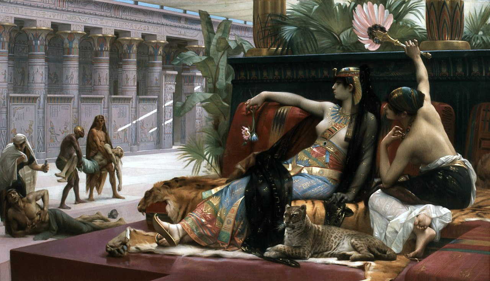
알렉상드르 카바넬, 「죄수에게 독을 시험하는 클레오파트라」(1887) · 19세기 회화. 그녀가 어떤 독이 가장 고통 없이 죽이는지 사형수에게 미리 시험했다는 전승. 그녀가 마지막에 택한 것은 코브라의 한 입, 가장 빠른 죽음이라 했다.
옥타비아누스가 다시 영묘에 도착했을 때, 그는 황금 옥좌 위의 죽은 클레오파트라와 시녀 둘의 시신과 그녀의 팔에 남은 두 점의 작은 핏자국을 보았다. 그는 사료에 따르면 한참을 침묵하다 말했다. "그녀에게 어울리는 죽음이었다(τοῦτο γενναῖον)." 그는 그녀를 안토니우스 옆에 알렉산드리아의 왕가 영묘에 매장하라 명령했다. 그녀의 영묘는 그 후 천 년간 알렉산드리아 어딘가에 알렉산드로스의 무덤과 함께 있었다가 사라졌다.
그러나 한 사람이 살아 있으면 안 되었다. 카이사리온, 열일곱 살의 청년, 카이사르의 친아들이라 주장되는 자, "왕들의 왕". 그는 사부 로돈과 함께 인도로 도주하던 중 잡혀 알렉산드리아로 돌아왔다. 옥타비아누스는 한 자문에게 사료에 따르면 철학자 아레이오스에게 그를 어떻게 처리할지 물었다. 아레이오스가 답한 그리스어 한 줄이 그 청년의 운명을 결정했다.
Οὐκ ἀγαθὸν πολυκαισαρίη.
카이사르가 둘이라는 것은, 좋은 일이 아니다.
아레이오스의 자문 (플루타르코스 『영웅전·안토니우스』 81장)
카이사리온은 그날 밤 처형되었다. 카이사르의 친아들 어쩌면 이라 주장되던 청년이 죽음으로써, 카이사르의 유일한 아들은 양자 옥타비아누스가 되었다.
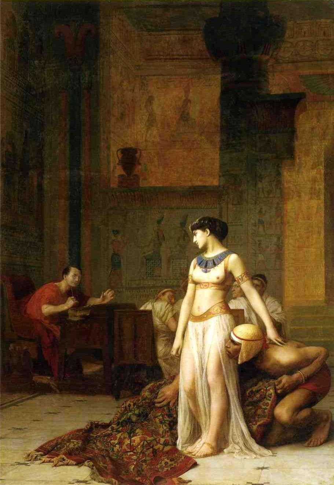
장-레옹 제롬, 「클레오파트라와 카이사르」(1866) · BC 48년 클레오파트라가 카펫에 둘둘 말려 카이사르의 방으로 운반된 그 전설. 그날 밤 잉태된 청년이 서른두 해 뒤 옥타비아누스의 손에 죽었다.
곁가지 — 알렉산드로스의 코
이집트를 정리한 옥타비아누스는 그 도시의 한 영묘를 참배했다. 알렉산드리아의 중심에 있던 알렉산드로스 대왕의 영묘. 그가 평생 거울로 삼은 그 사람의 시신은 카이사르의 시대에도, 아우구스투스의 시대에도 황금 관에 누워 누구나 볼 수 있게 안치되어 있었다. 옥타비아누스는 관 뚜껑을 열게 하고, 시신에 황금 화관과 꽃을 바쳤다. 그러다 사료(수에토니우스 51장)는 그가 시신의 코를 실수로 부러뜨렸다고 적는다. 그가 알렉산드로스의 후계자임을 자처한 그 순간에, 그가 알렉산드로스의 시신 일부를 망가뜨렸다. 그 다음 누군가 그에게 프톨레마이오스 왕조의 영묘에도 들르시겠냐 물었다. 옥타비아누스의 답은 짧았다. "나는 왕을 보러 왔지, 시체를 보러 온 것이 아니다(regem volui videre, non mortuos)."
곁가지 — 이집트, 황제의 사유 영지
이집트의 처리는 특별했다. 옥타비아누스는 이집트를 로마의 일반 속주가 아니라 황제 개인의 사유 영지로 만들었다. 어떤 원로원 의원도 황제의 허가 없이 이집트에 들어갈 수 없었다. 이유는 분명했다. 이집트는 로마의 곡물 창고. 그곳을 한 야심가가 차지하면 로마를 굶주리게 할 수 있었다. 폼페이우스가 한 세대 전 이집트에 발을 들여 어떻게 카이사르의 적이 되었는지, 그는 잊지 않았다. 그래서 황제만이 이집트에 갈 수 있었다. 그 정책은 디오클레티아누스 시대까지 삼백 년 이어졌다.
유대 · 헤로데의 도박
안토니우스 진영에 깊이 가담했던 헤로데 대왕은 악티움 직후 옥타비아누스 앞에 자기 왕관을 벗어 내려놓았다. "저는 안토니우스에게 충실했습니다. 안토니우스에게 충실했던 그 충성을 이제 폐하에게 바칩니다." 옥타비아누스는 그 솔직함에 만족하여 그에게 왕관을 다시 씌워주었다. 헤로데는 그 답례로 같은 해 시작한 거대한 예루살렘 성전 재건 사업을 황제의 이름으로 봉헌했다. 한 세대 뒤 그 성전 뜰에서 한 갈릴리의 청년이 가르치게 된다.
인도와 동남아
같은 시기 인도양 무역이 활발해졌다. 이집트가 로마의 손에 들어오면서, 홍해를 거쳐 인도 남부의 무지리스 항구로 가는 직접 항로가 열렸다. 한 세대 뒤 로마의 금화가 인도 남부 케랄라에서 발견되기 시작한다. 로마의 평화가 비단길의 바닷길을 열었다.
VIII
BC 27년 1월 16일 · 로마 원로원
원수정 — 프린켑스의 발명
강의 듣기
권력은 가장 정교한 형태로 자기를 숨길 때 가장 강하다. BC 27년 1월의 어느 사흘간, 한 청년이 자기 권력을 모두 원로원에 반납하고는 원로원이 그것을 모두 자기에게 돌려주도록 만들었다. 공화국은 그날 죽었다. 그러나 공화국이 죽었다는 사실을, 죽은 공화국 자체가 모르도록 그가 일을 처리했다.
악티움과 알렉산드리아 이후 옥타비아누스는 모든 군대를 자기 손에 거두어 들였다. 그가 이끄는 군대는 예순 개 군단, 약 삼십만 명. 그는 그것을 스물여덟 개 군단으로 줄였고, 나머지를 제대시켜 농지를 분배했다. 자금은 클레오파트라의 보고에서 나왔다. 그는 자기를 한 사람의 정복자가 아니라 한 사람의 평화 회복자로 보이게 했다.
BC 27년 1월 13일, 그는 원로원 회의에서 일어나 자기의 모든 비상권을 반납한다 선언했다. "공화국은 회복되었다(res publica restituta). 모든 권한을 원로원과 시민에게 돌려준다." 원로원 의원들은 사전 각본대로 충격을 받은 척했고, 그를 다시 일어나 만류했다. 의원들은 그에게 다시 군 통수권, 속주 통치권, 명예 직위를 청원했다. 사흘 뒤 1월 16일, 원로원은 그에게 새 호칭을 헌상했다.
Augustus — 존엄한 자, 신성한 자.
원로원의 호칭 헌정 (BC 27년 1월 16일)
"아우구스투스(Augustus)"는 augeo("자라게 하다", "더 크게 하다")의 어원에서 종교적 함의를 가졌다. 신성(神聖)에 가까운, 신탁의 권위를 가진 자라는 뜻. 이는 로마의 공화정 체제에 없던 새로운 호칭이었다. 원로원은 동시에 그에게 "원로원의 으뜸(princeps senatus)" 직위를 정식 부여했다. 그는 제일시민(Princeps)이 되었다. 왕(rex) 도, 독재관(dictator) 도, 황제(imperator) 도 아닌 제일시민.
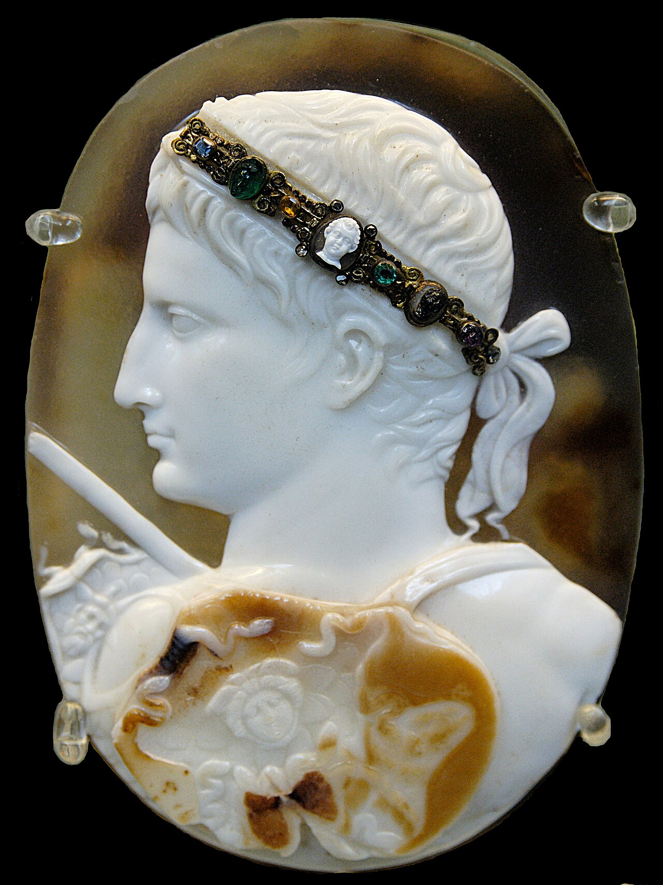
아우구스투스 카메오 · 대영박물관 소장. 사르도닉스에 새긴 신격화된 아우구스투스의 옆얼굴. 그가 동전과 보석에 영원히 남기게 한 그 얼굴은 청년의 얼굴이었다. 그는 늙는 얼굴을 동전에 새기지 않았다.
이것이 원수정(Principatus)의 탄생이었다. 공화정의 모든 외양 원로원, 집정관, 호민관이 그대로 남았다. 그러나 모든 실권 군대, 재정, 외교가 한 사람의 손에 있었다. 그는 매년 마치 공화국이 살아 있는 것처럼 자기 직위를 원로원에서 갱신받았고, 매번 그것을 공식 절차로 사양했다가 받았다. 한 무대 위에서 모든 등장인물이 자기 대사를 정확히 알고 마치 즉흥인 듯이 연기했다.
BC 23년, 그는 위중한 병에 걸렸다. 아마도 폐렴. 거의 죽을 뻔했다. 그가 회복한 뒤 그는 정치 체제를 다시 정비했다. 그는 집정관 자리를 영원히 사양했다. 대신 두 가지 새 권한을 자기에게 영구히 부여시켰다. 첫째 호민관 권한(tribunicia potestas). 본래 호민관은 평민 출신만 맡을 수 있는 평민의 보호자 직위였다. 그러나 호민관에게는 어떤 법안에도 거부권을 행사할 수 있는 신성불가침의 권한이 있었다. 아우구스투스는 자기는 호민관이 아니지만 호민관의 권한은 매년 갱신되어 평생 가졌다. 둘째 대(大)집정관 명령권(imperium proconsulare maius). 모든 속주 총독보다 큰 군대 통수권.
옥타비아누스는 이날부터 Imperator Caesar Divi Filius Augustus, 즉 "황제 카이사르, 신의 아들, 존엄한 자"가 되었다. Divi Filius("신의 아들")의 그 신은 그가 BC 42년 정식으로 신격화시킨 양아버지 카이사르였다. 그는 그러므로 신의 아들이었다.
곁가지 — 그가 원하지 않은 호칭, "왕"
원로원이 그에게 원래 어떤 호칭을 헌정하려 했는지 흥미롭다. 한 의원이 "로물루스(Romulus)", 로마의 시조를 호칭으로 제안했다. 그러나 옥타비아누스 자신이 그것을 거부했다. 이유는 로물루스가 자기 형 레무스를 죽이고 왕좌에 오른 자였기 때문이다. 자기 양아버지 카이사르가 "왕"의 의심을 받아 칼에 맞았다. 옥타비아누스는 그 단어를 평생 자기와 연결시키지 않았다. 그가 황제(emperor)가 된 사실을 자기 입으로 인정한 적이 없다. 「행적록」 마지막 문장은 자기를 단지 "제일시민(princeps)"이라 부른다.
파르티아 — 잃어버린 군기의 귀환
BC 20년, 아우구스투스는 한 세대 전 크라수스가 카르하이(BC 53)에서 파르티아에 잃어버린 로마의 군단기(軍團旗)를 외교 협상으로 돌려받았다. 그것은 군사적 승리가 아니라 외교의 승리였지만, 로마인들에게는 칸나이만큼 서른 해 묵은 굴욕이 씻기는 사건이었다. 아우구스투스는 그 군단기를 새로 지은 마르스 울토르(Mars Ultor, '복수자 마르스') 신전에 봉헌했다. 한 세대의 굴욕이 한 번의 외교로 씻겼다.
유대
같은 시기 유대를 다스리던 헤로데 대왕은 아우구스투스에게 충성을 맹세하며 황제의 후원으로 예루살렘 성전을 거대히 재건하기 시작했다(BC 20). 한 세대 뒤 그 성전 뜰에서 한 갈릴리 출신 청년이 가르치게 된다.
「베빌라쿠아의 아우구스투스」 · 1세기 흉상, 뮌헨 글립토테크. 시민 머리장식(Corona Civica)을 쓴 한 시민 으뜸. [Wikimedia · PD]
IX
BC 19–9년 · 로마 · 마르스 광장
팍스 로마나 — 평화의 제단과 황금기
강의 듣기
아우구스투스의 통치 후반은 군사가 아니라 문화의 시대였다. 그는 자기를 단순한 정복자가 아니라 "로마의 새 창시자"로 자리매김하려 했다. 그 자리매김의 도구가 시인들이었다.
BC 19년, 시인 베르길리우스가 자기 일생의 대작 「아이네이스(Aeneis)」 열두 권을 마치고 그리스 여행에서 돌아오는 길에 브룬디시움 항구에서 병으로 죽었다. 쉰한 살. 그는 임종 침대에서 자기 시가 아직 다듬어지지 않았다며 친구들에게 원고를 불태우라 명령했다. 친구들이 그것을 머뭇거리는 사이 아우구스투스가 그 원고를 자기 손으로 거두어 출판을 명령했다.
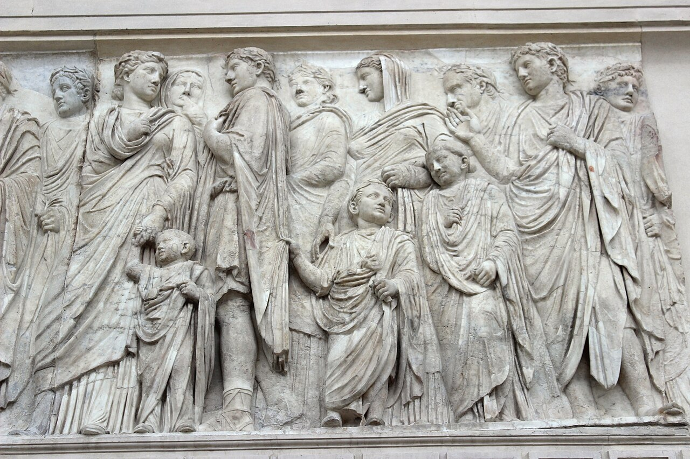
평화의 제단(Ara Pacis Augustae) · BC 13–9년에 건립. 황실 가족이 봉헌 행렬을 이루는 부조. 아우구스투스의 가족 정치학이 대리석에 새겨졌다. 가운데 한 어린아이가 옷자락을 잡아당기며 어른의 다리에 매달리는 모습이 가장 인상적이다.
「아이네이스」는 트로이의 영웅 아이네아스가 폐허에서 나와 이탈리아에 로마라는 새 도시의 씨앗을 심는 서사시였다. 그 서사시의 한 가운데에 아우구스투스가 자기를 그 아이네아스의 후예로 자리매김할 행이 있었다. 한 권의 시집이 한 가문의 신화를 완성했다.
Tu regere imperio populos, Romane, memento, hae tibi erunt artes, pacique imponere morem, parcere subiectis et debellare superbos.
로마인이여, 그대가 할 일은 통치하라. 이것이 그대의 솜씨가 되리니, 평화에 도덕을 세우고, 항복하는 자를 살리고, 거만한 자를 짓밟는 것.
베르길리우스 『아이네이스』 6권 851–853
곁가지 — 한 시인의 열두 권, 권력의 신화적 도금
「아이네이스」의 진짜 정치적 무게는 한 이름의 한 음의 변경에서 가장 정확하게 드러난다. 트로이의 영웅 아이네아스의 아들의 옛 그리스 신화상의 이름은 아스카니우스(Ascanius). 그런데 베르길리우스의 열두 권 안에서 그 아들의 이름은 이울루스(Iulus)로 바뀐다. 라틴어 Iulius의 어원이 되는 이름. 즉 카이사르 가문(gens Iulia)의 시조가 트로이의 한 어린 왕자, 그러므로 베누스 여신의 손자, 그러므로 신의 자손이라는 도식이 한 시인의 한 음의 손짓으로 완성되었다. 아우구스투스는 그 베누스의 후예의 후예였다.
호라티우스의 「세기 찬가(Carmen Saeculare)」 역시 그가 직접 의뢰한 곡이었다. BC 17년 5월 31일부터 6월 3일까지 사흘간 열린 세기제(Ludi Saeculares), 백열 해에 한 번 열리는 로마의 가장 큰 종교 축제의 클라이맥스에서 스물일곱 명의 소년 합창단과 스물일곱 명의 소녀 합창단이 황제와 원로원 앞에서 그 시를 노래했다. 한 곡의 합창이 한 시대의 시작을 알렸다. 시인은 황제의 합창단장이었다.
같은 시기 호라티우스는 BC 17년의 「세기 찬가」를 새로운 백 년의 시작을 노래했다. 리비우스는 로마 건국부터 자기 시대까지 백사십이 권의 거대한 로마사를 쓰기 시작했다. 그가 다 쓰지는 못했지만 그가 쓴 책이 후대 모든 로마사의 출발점이 되었다. 그러나 한 시인은 황제에게서 멀어졌다. 오비디우스. AD 8년, 그는 아우구스투스의 명령으로 흑해 연안의 외딴 도시 토미스(현 콘스탄차)로 추방되어 그곳에서 죽을 때까지 시집을 보내며 사면을 청했으나, 끝내 돌아오지 못했다. 그가 무엇으로 추방되었는지는 사료가 모호하다. 시(아마도 「사랑의 기술」)와 어떤 사건(carmen et error)이라 그 자신이 적었다. 황금기에도 그늘은 있었다.
BC 13–9년, 아우구스투스는 자기 손으로 가장 큰 기념물을 세웠다. 아라 파키스 아우구스타이(Ara Pacis Augustae), "아우구스투스의 평화의 제단". 마르스 광장 한 켠에 거대한 대리석 제단을 사방의 부조로 황실 가족의 봉헌 행렬을 새겼다. 한 도시의 모든 시민이 한 가족의 행렬을 보아야 했다. 그 가족이 그들의 시대를 다스리고 있었다.
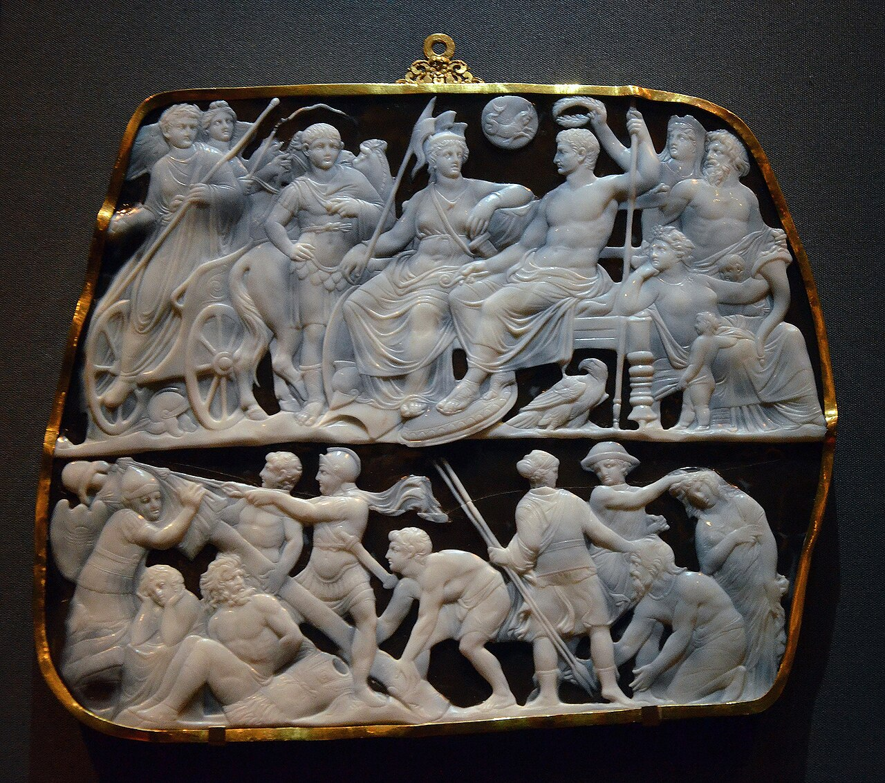
겜마 아우구스테아(Gemma Augustea) · 비엔나 미술사 박물관 소장. AD 10–12년경 제작된 사르도닉스 카메오. 윗칸에는 신격화된 아우구스투스가 자기 의자에 앉아 여신들에게 둘러싸여 있고, 아랫칸에는 패배한 야만족이 끌려나오는 장면이 새겨졌다. 한 손바닥만한 보석에 한 제국의 자기 이해가 압축되어 있다.
이 모든 것이 한 단어를 향했다. 팍스 로마나(Pax Romana), "로마의 평화". 그가 자기 일생에 가장 자랑하고 싶었던 한 가지가 있었다. 그는 자기 「행적록」에 적었다. "야누스 퀴리누스 신전의 문, 로마가 전쟁 중일 때 열리고 평화 중일 때 닫히는 그 문을, 나의 시대에 세 번 닫았다. 그 이전에는 로마 건국 이래 칠백 년 동안 두 번 닫혔을 뿐이었다." 인구조사도 그가 자랑한 한 가지였다. 사십이 년 만에 처음으로 로마 시민 전체의 인구조사가 다시 시행되었다. 그가 명령한 두 번째 인구조사 BC 8년에 등록된 시민이 사백이십삼만 삼천 명이었다. 그가 죽기 직전 세 번째 인구조사 AD 14년에는 사백구십삼만 칠천 명이었다. 한 도시가 한 사람의 통치 아래 자라났다.
곁가지 — 누가복음의 한 줄
한 세대 뒤 한 그리스어로 쓴 복음서가 한 줄을 적었다. "그 시절에 가이사 아구스도로부터 칙령이 나서 천하로 다 호적하라 하였으니 이 호적은 구레뇨가 수리아 총독이 되었을 때에 처음 한 것이라."(누가복음 2:1–2) 황제가 명령한 인구조사 한 번이 갈릴리의 한 부부를 베들레헴으로 걷게 했고, 그 길의 끝에서 한 아기가 한 마구간에서 태어났다. 한 황제의 평화가 한 새로운 종교의 이백 년 전파를 가능하게 했다는 역사의 아이러니를, 황제는 자기 손으로 만든 인구조사로 가능하게 했다. 그러나 그 사실을 황제는 죽을 때까지 알지 못했다.
변경의 평화는 평화가 아니었다
평화는 도시 안의 평화였다. 변경에서는 평화가 아니었다. 그의 의붓아들들이 그의 변경의 전쟁을 도맡았다. 큰 의붓아들 티베리우스는 발칸 일대를 게르마니아 일부를 평정했다. 작은 의붓아들 드루수스는 갈리아 동쪽의 게르마니아 깊숙이 진군해 라인 강 너머 엘베 강까지 도달했다. BC 9년, 그러나 드루수스는 게르마니아에서 말에서 떨어져 다리가 부러져 그곳에서 죽었다. 스물아홉 살. 그의 죽음은 아우구스투스의 두 번째 큰 상처였다. 첫 번째는 BC 23년의 후계로 점찍었던 조카 마르켈루스의 죽음이었다.
X
통치 전 기간 · 팔라티노 언덕
리비아 — 한 황제의 침실
강의 듣기
옥타비아누스와 리비아 사이에서는 친자식이 태어나지 않았다. 리비아는 한 번 임신했으나 사산했다. 그러나 쉰한 해의 결혼 동안 옥타비아누스가 다른 여자와의 사이에서 자식을 본 적도 없다. 적어도 공식적으로는. 후대인들은 그 관계의 본질을 두고 다양한 추측을 했다. 한 가지는 분명했다. 리비아는 그의 정치적 동반자였다. 그가 결단을 망설일 때 그녀가 결단을 도왔다. 그가 분노할 때 그녀가 진정시켰다. 모든 권력자의 침실에는 또 한 명의 권력자가 있었다.
한 황제의 침실의 한 결을 후대 사가들은 황제의 한 은밀한 공포에서 발견했다. 수에토니우스 90장에 따르면, 그는 평생 천둥과 정확하게는 번개를 병적으로 두려워했다(tonitrua et fulgura paulo infirmius expavescebat). 어디로 가든 그는 바다표범 가죽으로 만든 부적을 품에 지니고 다녔다(pellem vituli marini). 그 가죽이 번개를 막아 준다는 옛 신앙. 폭풍의 기미가 보이면 그는 황제의 자리를 떠나 어디든 지하의 둥근 천장의 방으로 피신했다. 이 공포는 청년기의 한 야간 행군에서 그의 바로 옆에 있던 한 노예가 벼락에 맞아 죽은 사건에서 시작되었다고 수에토니우스는 적는다. 그 사건이 그를 평생 따라다녔다. 리비아의 옆자리는 그 공포를 함께 견딘 한 사람의 자리였다.
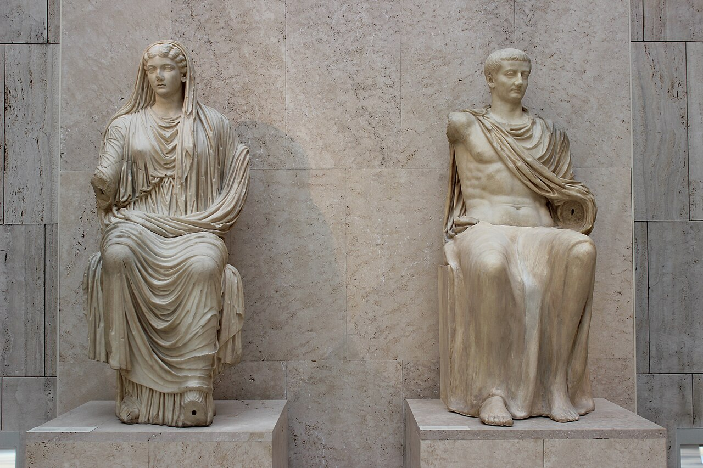
리비아와 어린 티베리우스 · 황실 가족 부조. 리비아의 첫 결혼에서 태어난 아들이 마침내 아우구스투스의 후계자가 된다. 그러나 그 결정은 한 어머니의 일생의 가장 긴 정치 작업이었다.
리비아의 정치적 영향력에 대해 사료가 거의 일치하는 일화 하나. 어느 날 옥타비아누스가 황제가 된 뒤 한 음모자를 어떻게 처리할지 망설였다. 리비아가 침실에서 그에게 말했다. "의사가 하나의 약이 듣지 않을 때는 다른 약을 쓰지 않더냐. 그대도 그러시오. 죽음으로 안 되면 자비로 다스려보시오. 그가 살아 그대의 자비를 천하에 전할 것이오." 옥타비아누스는 그 음모자를 사면했고, 그 음모자는 평생 그의 충실한 신하가 되었다. 카시우스 디오는 이 일화를 두고 "리비아가 그에게 사람을 죽이지 않고도 적을 친구로 만드는 법을 가르쳤다."고 적었다. 그러나 같은 사료는 그녀가 적이 친구가 되지 않을 때 어떻게 적이 죽었는지도 적는다. 그 죽음들이 모두 그녀의 책임이라 말할 수는 없다. 그러나 그녀의 적들이 자주, 그리고 편리하게 죽었다는 사실은 동시대인들도 이미 알아챘다.
곁가지 — 리비아의 집 (1869년, 팔라티노 언덕)
1869년 고고학자 피에트로 로사(Pietro Rosa)의 팀이 팔라티노 언덕의 한 비탈을 파고 들어가던 중 지하의 한 작은 집을 발견했다. 두 층의 작은 아트리움(중정) 한 가운데에 둘러싼 방 몇 칸. 한 방의 벽에서 "IVLIA AVGVSTA"가 새겨진 납 파이프가 나왔다. 리비아가 아우구스투스 사후에 받은 칭호. 이 집이 그녀의 집이라는 증거였다. 발굴된 그 작은 집의 벽에는 폴리페모스가 님프 갈라테이아를 쫓는 장면, 메르쿠리우스가 이오를 풀어주는 장면의 정교한 프레스코가 보존되어 있었다. 그러나 집 자체는 후대 황제들의 호화 궁전들에 비하면 놀라울 정도로 작고 소박했다. 수에토니우스 72–73장은 아우구스투스가 같은 작은 집에 마흔 해를 살았고, 같은 천으로 짠 의복을 누이와 부인과 손녀들이 손수 짜준 것만을 입었으며, 평민의 식탁 이상의 사치를 거부했다고 적었다. 한 제국의 주인이 한 시민의 집에 살았다. 그 자기 연출이 그의 권력을 평생 견디게 했다.
곁가지 — 누이 옥타비아의 평정
이 모든 시간 동안, 아우구스투스의 누이 옥타비아는 로마에 안토니우스의 합법적 부인으로 살고 있었다. 그녀는 안토니우스와 두 딸을 두었고, 동시에 안토니우스의 전처 풀비아의 자식들까지 자기 집에서 함께 키웠다. 안토니우스가 클레오파트라와의 추문에 빠진 동안에도 그녀는 그의 자식들을 거두었다. BC 32년 안토니우스가 알렉산드리아에서 옥타비아에게 정식 이혼장을 보냈을 때, 그녀는 짐을 싸 안토니우스의 집을 나서면서 그의 모든 자식을 자기와 함께 데려갔다. 풀비아의 자식들까지. 그녀는 그 모든 아이들을 평생 자기 자식으로 길렀고, 한 사람도 빠뜨리지 않았다. 안토니우스의 잔인함 옆에서 그녀가 보여준 그 평정은 후대 로마인들이 로마 부인의 가장 높은 본보기로 기억한다.
로마 시내
아우구스투스가 즉위했을 때 로마 시민은 약 백만 명이었다. 그가 죽을 때 거의 같은 수였다. 그가 한 도시의 한 행정 구조를 바꾸었다. 도시를 열네 구역(regiones)으로 나누었고, 화재 진압 부대(vigiles)를 일곱 개 만들었고, 곡물 분배(annona)를 정식 행정 부서로 두었다. 한 도시가 한 행정의 도시로 다시 태어났다. 그가 세운 그 행정 단위들이 그 후 사백 년을 갔다.
Tabula III · Imperium Augusti Anno XIV p.C.n.
AD 14년 — 그가 죽을 때 남긴 제국
로마 제국 (스물여덟 군단 · 약 360만 km²)잃은 영역 (게르마니아, AD 9 이후)파르티아 (외교 협상선) 토이토부르크 (AD 9)
그가 죽을 때 남긴 제국의 면적은 약 삼백육십만 km²로, 알렉산드로스가 정복한 영역의 약 칠십 퍼센트. 그러나 그가 받은 벽돌의 도시와 그가 남긴 대리석의 도시 사이의 차이는 면적이 아니라 지속 가능성이었다. 그가 만든 제국은 그가 죽고 나서 두 백 년의 평화를 보냈다. 알렉산드로스의 제국은 그가 죽은 즉시 갈가리 찢어졌다. 한 사람이 무엇을 정복했느냐가 아니라 그가 무엇을 살려두었느냐가 그 사람의 진짜 유산이다.
XI
AD 9년 9월 · 게르마니아 토이토부르크 숲
토이토부르크 — 바루스, 내 군단을 돌려달라
강의 듣기
그의 통치의 가장 어두운 사건은 AD 9년 가을 게르마니아의 한 숲에서 일어났다. 아우구스투스의 게르마니아 정책은 그의 의붓아들 드루수스가 BC 12–9년 동안 엘베 강까지 진군해 게르마니아를 새 속주로 편입하는 것이었다. 드루수스가 죽은 뒤 그 사업은 푸블리우스 큉크틸리우스 바루스(Publius Quinctilius Varus)라는 노련한 그러나 자만한 총독에게 넘겨졌다.
바루스는 자기 보좌관 한 명을 신뢰했다. 아르미니우스(Arminius). 게르만 케루스키 부족의 족장 아들. 어려서 로마로 인질로 보내져 로마 시민권을 받고 로마 기사의 지위를 가졌고, 라틴어를 모국어처럼 구사했고, 로마 군단의 보조 부대를 지휘했다. 바루스에게 그는 같은 로마인이었다.
그러나 아르미니우스는 자기 부족의 충성을 결코 버린 적이 없었다. AD 9년 9월 가을 바루스가 세 군단(17, 18, 19)으로 라인 강 쪽의 동영지(冬營地)로 이동하는 길에, 아르미니우스는 그에게 거짓 정보를 보냈다. 한 작은 부족의 봉기가 일어났다고. 바루스는 보급 부대와 가족까지 데리고 군단을 토이토부르크 숲의 좁은 길로 끌고 들어갔다. 그 숲의 모든 길목에 아르미니우스가 모은 게르만 부족 전사들이 매복하고 있었다.
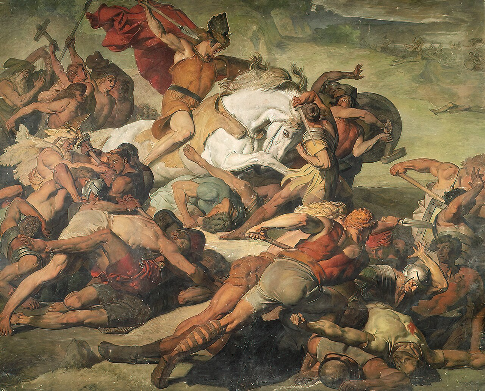
토이토부르크 숲 전투의 아르미니우스 · 페터 얀센(1873). 19세기 독일 민족주의가 이 한 사건을 독일의 시조적 사건으로 기억했다. 19세기 독일에서 그는 "헤르만(Hermann)"으로 다시 태어났다. 그의 본명을 게르만식으로 옮긴 이름이다.
사흘간 비가 쏟아졌다. 로마 군단의 가죽 갑옷이 무거워지고, 활시위가 늘어졌고, 무거운 군장이 진흙 속에 박혔다. 좁은 길에서 일렬로 늘어선 군단이 한 번도 전투 대형을 갖추지 못한 채로 학살당했다. 세 군단 전체 약 만 오천에서 이만 명이 모두 죽었다. 바루스는 자기 검으로 자결했다. 세 군단의 군단기도 모두 잃었다. 로마사의 가장 큰 단일 군사적 패배 중 하나.
소식이 로마에 도달했을 때 아우구스투스는 일흔하나였다. 사료(수에토니우스 『아우구스투스』 23장)가 전하는 그의 반응은 황제의 가장 인간적인 한 장면이다. 그는 옷자락을 찢고 몇 달간 머리와 수염을 자르지 않고 자라게 두었다. 그는 자기 궁전의 한 벽에 머리를 부딪치며 같은 한 마디를 반복했다고 한다.
Quintili Vare, legiones redde!
바루스, 내 군단을 돌려달라. 바루스, 나의 군단을 돌려달라.
아우구스투스 (수에토니우스 『아우구스투스』 23장)
그 후 그는 매년 그 패전의 기일에 한 날의 애도를 자기 손으로 지켰다. 세 군단의 번호 17, 18, 19는 그 후 한 번도 다시 채워지지 않았다. 로마의 게르마니아 정복 야망은 그 숲에서 영원히 끝났다. 라인 강이 그 후 사백 년간 로마와 게르만의 경계가 되었다.
곁가지 칼크리제(Kalkriese), 1987–2009 한 숲을 다시 찾다
토이토부르크의 정확한 학살 장소가 어디인지는 백 년 학계 논쟁의 주제였다. 후대 사료(타키투스 『연대기』 1.60–62)의 묘사와 19세기 지형 추정만으로는 정확한 지점을 짚을 수 없었다. 그러던 1987년, 독일 니더작센의 한 작은 마을 칼크리제(Kalkriese, 오스나브뤼크 북쪽)에서 영국군 출신의 아마추어 고고학자 토니 클룬(Major Tony Clunn)이 금속 탐지기로 우연히 로마 동전 몇 개를 발굴했다. 동전의 연대가 모두 아우구스투스 시대 말기였다. 이후 스무 해 동안 그 인근의 한 좁은 길 양 옆에서 약 육천 점의 로마 군장, 이천 개의 동전, 다수의 인간 두개골과 말의 발굽 잔해가 차례로 나왔다. 동전의 발행 연도는 정확히 모두 AD 9년 이전의 것이었고, 갑옷 조각 일부에는 17·18·19 군단의 표식이 새겨져 있었다.
2009년 토이토부르크 학살의 정확히 이천 주년이 되는 그 해 베를린 박물관과 칼크리제 박물관에서 동시 대규모 전시가 열려, 한 세기의 학계 논쟁이 정리되었다. 백 년 동안의 추정이 한 아마추어의 한 발걸음에서 시작되어 사실이 되었다. 그 좁은 진흙 길 옆의 흙 한 줌마다 한 황제의 "Vare, legiones redde!"가 묻혀 있었다.
곁가지 — 아르미니우스, 한 영웅의 그 후
아르미니우스는 그 후 열두 해 더 살았다. 그는 게르만 부족 동맹을 유지하려 했으나, 그가 너무 큰 권력을 가지려 한다는 의심을 산 자기 부족의 한 친척에게 AD 21년 살해되었다. 서른일곱 살. 그의 무덤은 알려져 있지 않다. 천 팔백 년 뒤 19세기 독일의 한 민족주의가 그를 다시 찾아냈다. 데트몰트(Detmold)의 한 산 위에 1875년 세워진 거대한 헤르만 동상이 지금 그 숲의 자리를 바라보고 있다.
같은 해 유대
토이토부르크와 같은 해 AD 9년 유대는 헤로데 대왕의 손자 시대를 살고 있었다. 헤로데의 손자 헤로데 안티파스가 갈릴리를 다스렸고, 그의 영지의 한 작은 마을 나자렛에서 한 열두 살 가량의 소년이 자라고 있었다. 그가 갈릴리 호수가의 한 산상에서 자기 가르침을 시작하는 것은 그로부터 스무 해 뒤의 일이다.
중국
같은 해 중국의 한(漢)나라는 외척 왕망(王莽)의 손에 사실상 무너졌다. AD 9년 그가 직접 황제에 즉위해 신(新)나라를 세웠다. 이백 년 한나라가 잠시 사라졌다. 아우구스투스의 토이토부르크의 한 해가 동방의 황제가 한 외척의 손에 무너진 그 해였다. 두 거대한 제국의 같은 해의 같은 흔들림이었다.
XII
BC 23–AD 8년 · 로마 · 판다테리아 섬
후계의 비극 — 자식들이 차례로 죽다
강의 듣기
한 인생에 가장 잔인한 사건은 정치도 전쟁도 죽음도 아니다. 자기 손으로 자기 자식을 잘라내야 할 때다.
아우구스투스에게는 친자식이 단 한 명, 율리아뿐이었다. 두 번째 부인 스크리보니아에게서 BC 39년에 태어난 외동딸. 그녀는 아버지의 모든 정략결혼 도구가 되었다.
열네 살에 그녀는 조카 마르켈루스와 결혼했다(BC 25년). 마르켈루스는 그녀가 열일곱 살 때 BC 23년 병으로 죽었다. 베르길리우스는 「아이네이스」 6권에 마르켈루스를 추도하는 행을 따로 끼워넣었다고 한다. 그 행을 시인이 황실 가족 앞에서 낭독했을 때, 어머니 옥타비아가 그 자리에서 정신을 잃었다고 전해진다. 마르켈루스는 아우구스투스의 첫 후계 후보였다.
열아홉 살에 그녀는 아버지의 명령으로 스물다섯 살 연상의 아그리파와 결혼했다(BC 21년). 아그리파는 아버지의 평생의 친구. 두 사람 사이에 다섯 자식 가이우스 카이사르, 루키우스 카이사르, 율리아, 아그리피나, 아그리파 포스투무스가 태어났다. 아우구스투스의 후계는 두 손주 가이우스와 루키우스에게 정해졌다.
BC 12년 아그리파가 죽었다. 율리아는 스물일곱에 두 번째 과부가 되었다. 아우구스투스는 그녀를 다시 한 번 정략결혼시켰다. 자기 의붓아들 티베리우스와. 티베리우스는 자기 사랑하는 부인 빕사니아(아그리파의 다른 딸)와 강제로 이혼해야 했고, 율리아 자기 의붓누이와 결혼해야 했다. 결혼은 양쪽 모두에게 지옥이었다. 두 사람의 한 아이가 태어나자마자 죽었다. 티베리우스는 BC 6년 모든 직위를 버리고 로도스 섬으로 자진 망명했다. 율리아는 로마에 자유롭게 남았다.
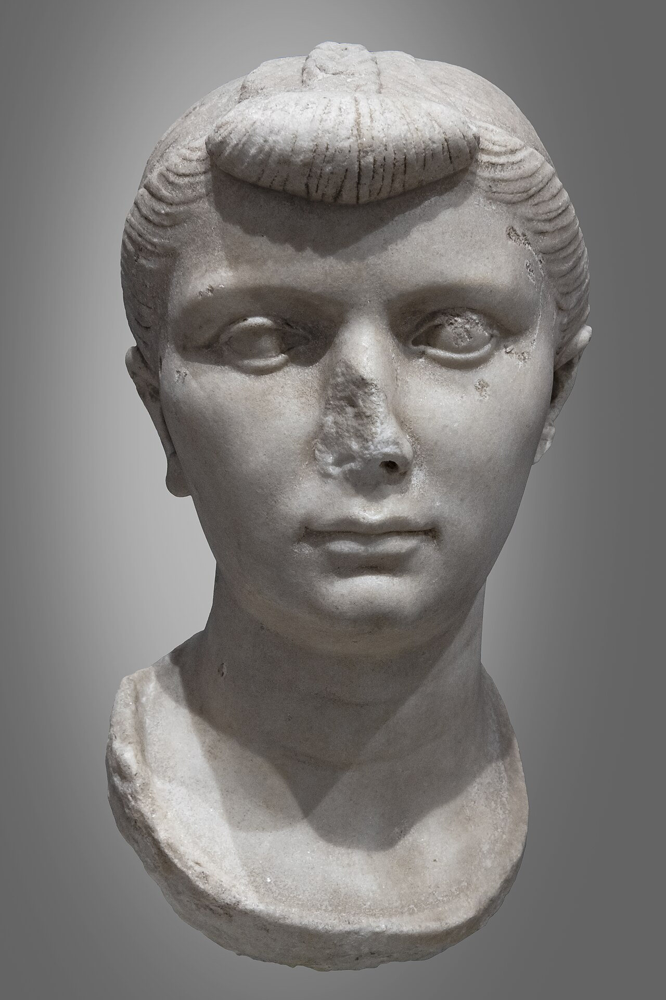
율리아 더 엘더(Julia Maior) · 툴루즈 생레몽 박물관. 아우구스투스의 외동딸. 아버지가 도시 전체에 도덕의 회복(lex Iulia de adulteriis coercendis, BC 18)을 선포한 그 가족 안에서 가장 큰 추문이 자랐다.
로마에 자유로이 남은 율리아의 추문이 시작되었다. 그녀의 정부(情夫)들 명단이 떠돌았다. 그 명단에 옛 카이사르 살해자의 아들 율루스 안토니우스(안토니우스의 둘째 아들)가 있었다. AD 2년 그 모든 것이 아우구스투스의 귀에 도달했다. 한 가지 결정적 정보는 그녀가 로마 광장의 자기 아버지의 연설대(rostra) 위에서 정부와 동침했다는 것이었다. 한 도시 전체에서 한 도시의 도덕을 회복한다는 그 아버지의 무대 위에서.
아우구스투스의 분노는 한 도시를 흔들었다. 그는 율리아의 정부들을 모두 처형하거나 추방했다. 율루스 안토니우스는 그 자리에서 자결을 명령받았다. 율리아 자신은 로마에서 추방되어 캄파니아 앞바다의 작은 무인도 판다테리아(Pandateria)로 보내졌다. 와인도, 남성 손님도, 어떤 사치도 금지된 평생의 유배. 어머니 스크리보니아만이 자진해서 딸을 따라가 함께 그 섬에서 살았다.
아우구스투스는 그 후 죽을 때까지 열여섯 해 동안 자기 외동딸을 한 번도 만나지 않았다. 누군가 그 추방을 풀어달라 청할 때마다 그는 말했다. "너의 딸들과 부인들이 그녀처럼 되기를 원하느냐." 그 한 마디를 그는 매번 같은 단어로 반복했다.
같은 시기 그의 두 손자, 후계 후보 가이우스 카이사르와 루키우스 카이사르가 차례로 죽었다. 루키우스는 AD 2년 마실리아에서 병으로, 가이우스는 AD 4년 아르메니아에서 부상으로. 두 죽음 모두 자연사라고 사료는 적지만, 후대 일부 사가들은 리비아의 그림자를 의심한다. 두 손자가 죽음으로써 후계 자리는 결국 리비아의 첫 아들 티베리우스에게 돌아갔다.
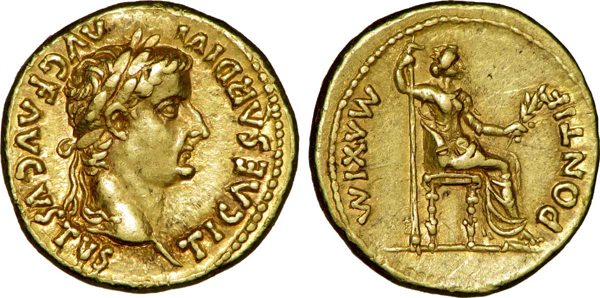
티베리우스 금화 · 리비아의 첫 결혼에서 태어난 의붓아들. AD 4년, 후계로 정식 입양되었다. 아우구스투스가 평생 가장 좋아하지 않은 자기 후계자.
곁가지 — "내게는 두 짐이 있다"
사적인 자리에서 한 친구가 그에게 가족과 군대 두 가지 중 어느 쪽이 더 다스리기 어려운지 물었다. 아우구스투스의 답은 사료(마크로비우스 『사투르날리아』)가 전한다. "내게는 두 개의 곪은 종기가 있다, 가족과 군대. 그 둘이 내가 죽을 때까지 다스려야 할 나의 두 짐이다." 그는 외동딸을 추방했고, 외동딸의 큰 손녀 율리아 더 영거도 AD 8년 추방했다(같은 추문). 그의 마지막 손자 아그리파 포스투무스도 추방했다. 그의 후계 후보였던 두 손자는 AD 2년과 AD 4년에 연이어 일찍 죽었다. 한 황제의 가족이 차례로 비어 갔다. 마지막에 그가 후계자로 택해야 했던 사람은 그가 가장 가까이 두기를 꺼렸던 의붓아들 티베리우스였다.
XIII
AD 14년 8월 19일 · 캄파니아 놀라
놀라의 마지막 거울 — 잘 연기했는가
강의 듣기
AD 14년 여름. 일흔여섯 살의 아우구스투스가 후계자 티베리우스와 함께 캄파니아의 한 휴양지로 떠났다. 티베리우스가 일리리아의 새 임지로 가는 길을 잠시 동행하기 위해서. 그가 캄파니아의 옛 도시 놀라(Nola)에 머물던 동안 그는 자기 친아버지가 사망했던 그 같은 집에 묵었다. BC 59년에 그의 아버지가 그 집에서 죽었다. 일흔여섯 해 뒤 같은 집에서 그가 죽는다.
병은 가벼운 위장병에서 시작했다. 그는 며칠 침대에서 일어나지 못했다. 8월 19일 아침 그는 자기가 마지막에 가까이 있을 것을 알아챘다.
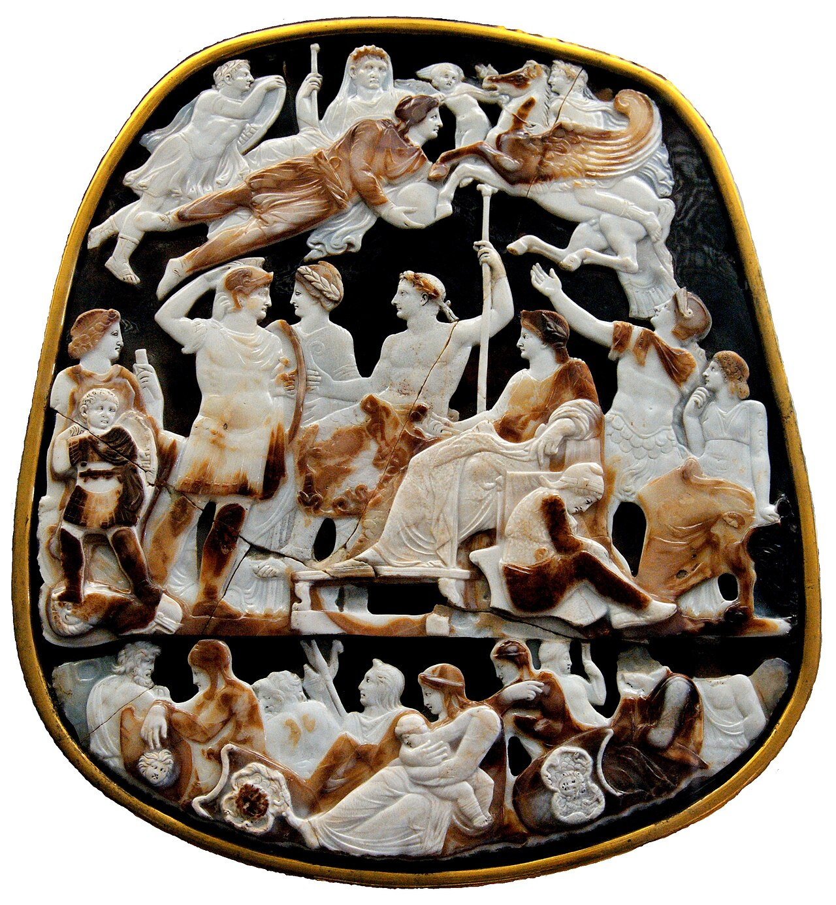
프랑스 대카메오(Grand Camée de France) · 파리 메달리 박물관. AD 23년경 아우구스투스 사후 제작된 황실 가족의 신격화. 윗단에 신격화된 아우구스투스가 자기 후계자들을 내려다 보고 있다. 그가 평생 자기 가족을 다스리려 했던 그 의지가 사후의 보석에 새겨졌다.
사료(수에토니우스 『아우구스투스』 99장)가 전하는 그의 마지막 시간은 한 황제의 가장 정확한 자기 인식을 보여준다. 그는 침상의 한 시녀를 시켜 거울을 가져 오게 했다. 그리고 자기 가발을 매만지고 자기 얼굴의 화장을 정리하게 했다. 그는 자기 인생의 마지막 무대를 준비하고 있었다. 그가 함께 있던 친구들에게 던진 마지막 질문은 평생 자기 인생을 무대 위의 한 연극으로 살아온 한 사람의 마지막 자기 평가였다.
Ecquid iis videretur mimum vitae commode transegisse?
Acta est fabula: plaudite!
내가 인생의 코미디를 잘 연기했는가. 잘 연기했다 싶거든 박수를 보내달라. 연극이 끝났다.
아우구스투스의 마지막 말 (수에토니우스 『아우구스투스』 99장)
그것은 로마의 모든 희극의 마지막 한 줄이었다. 배우가 자기 가면을 벗으며 관객에게 던지는 청. 그가 자기 일생을 한 코미디(mimus)라 부른 그 자기 인식은 그가 평생 권력을 행사했던 그 방식의 본질이었다. 그는 황제였으나 황제가 아니라 연기 했고, 그는 신의 아들이었으나 신의 아들을 연기 했고, 그는 한 시민이었으나 시민을 연기 했다. 한 사람의 인생이 한 무대의 한 역할이라는 그 자기 인식이 그를 권력 위에서 미치지 않게 한 한 사람의 비결이었다.
거울을 내려놓고 그는 마지막으로 침실의 한 사람을 바라보았다. 쉰한 해를 그의 곁에 있었던 한 여인. 그는 그녀의 손을 잡고 한 라틴어의 한 문장을 그녀에게 남겼다고 사료(수에토니우스 동책)는 전한다.
Livia, nostri coniugii memor, vive et vale.
리비아여, 우리의 결혼을 기억하고 살아 있어라. 잘 가거라.
아우구스투스가 리비아에게 (수에토니우스 『아우구스투스』 99장)
그가 마지막 숨을 거둔 것이 AD 14년 8월 19일 오후 세 시경. 일흔여섯 해 열한 달. 양아버지 카이사르가 살았던 쉰다섯 해보다 스물한 해를 더 살았고, 그가 평생 거울로 삼은 알렉산드로스가 살았던 서른두 해보다 마흔네 해를 더 살았다. 그의 통치는 마흔한 해 동안 이어졌다. 율리우스 카이사르의 단 네 해의 독재와 한 자릿수 차이가 났다. 그가 길어서 그가 이긴 것이었다. 그가 죽지 않아서 그가 이긴 것이었다.
곁가지 — 무화과의 그림자, 한 음모설 (카시우스 디오 56.30)
그의 자연사를 후대인 모두가 받아들이지는 않았다. 카시우스 디오 『로마사』 56권 30장은 한 음모를 적는다. 늙은 황제가 후계의 마지막 망설임 끝에 자기 손자 아그리파 포스투무스를 풀어주려 한다는 소문이 돌았다. 그것이 한 어머니의 한 아들의 황좌를 흔들었다. 쉰한 해를 한 침실에 함께 한 부인이 디오에 따르면 황제가 자기 정원에서 직접 따서 먹기를 좋아한 무화과 나무의 열매 한 알 한 알의 표면에 독을 발랐다. 황제가 그 나무에서 직접 따 먹은 무화과들이 그를 죽였다. 그녀 자신은 미리 표시한 다른 가지의 무화과를 먹어 의심을 가렸다.
타키투스 『연대기』 1.5도 같은 의심을 적는다, 그러나 좀 더 신중하게. "리비아의 한 음모가 한 황제의 임종을 앞당겼다는 소문이 떠돌았다." 두 사가 모두 자기들이 사실을 확인할 수 없다는 것을 인정한다. 현대 사가들은 두 사가의 그 의심을 대부분 부정한다. 일흔여섯 살의 황제가 이미 자기 후계를 티베리우스로 확정해 두었던 그 시점에 리비아가 그를 죽일 동기가 약했다는 합리적 이유. 그러나 옳든 그르든 한 가지는 확실하다. 동시대인의 일부는 처음부터 그렇게 의심했다.
곁가지 — 리비아의 침묵의 사흘
아우구스투스의 죽음이 즉시 발표되지 않았다. 사료(타키투스 『연대기』 1권 5장)가 전하는 리비아의 마지막 일은 어둡다. 그가 죽은 뒤 사흘간 리비아는 한 도시의 한 모든 문을 닫고 한 도시의 한 모든 정보를 차단했다. 그 사이 그녀는 일리리아로 가던 티베리우스를 부랴부랴 돌아오게 했다. 동시에 사료(타키투스 동책 6장)는 그녀가 그 사흘 동안 아우구스투스의 마지막 손자 아그리파 포스투무스가 추방되어 있던 플라나시아 섬에 사자를 보내 그를 처형하게 했다고 적는다. 황제가 살아서 그 손자를 풀어주려 한 그 마지막 결정이 있기 전에 그녀가 먼저 처리한 것이다.
사흘 뒤 그녀가 한 도시의 문을 다시 열었을 때, 두 가지가 동시에 알려졌다. 아우구스투스는 죽었고, 티베리우스가 황제다. 그녀가 쉰한 해를 옆에 두었던 그 남편이 가장 좋아하지 않았던 그 의붓아들이, 그녀가 처음 임신한 채로 시집 와 낳은 그 큰 아들이, 그날 한 도시의 다음 황제가 되었다. 리비아는 그 후 열다섯 해를 더 살았다.
XIV
AD 14년 9월 8일 이후 · 마르스 광장
마우솔레움과 신격화 — 행적록의 1500년 잠
강의 듣기
그의 시신은 캄파니아에서 로마까지 도시별 행진으로 옮겨졌다. 한 도시 한 도시에서 군중이 길가에 나왔다. 9월 8일 로마의 마르스 광장에서 화장식이 거행되었다. 사료(수에토니우스 100장)가 전하는 한 장면이 있다. 한 전직 법정관 누메리우스 아티쿠스가 화장의 마지막 불꽃 위에서 황제의 영혼이 한 마리 독수리의 형태로 하늘로 오르는 것을 보았다고 원로원에 증언했다. 그 증언의 대가로 그는 백만 세스테르티우스를 받았다. 한 황제의 신격화의 마지막 공식 절차였다.
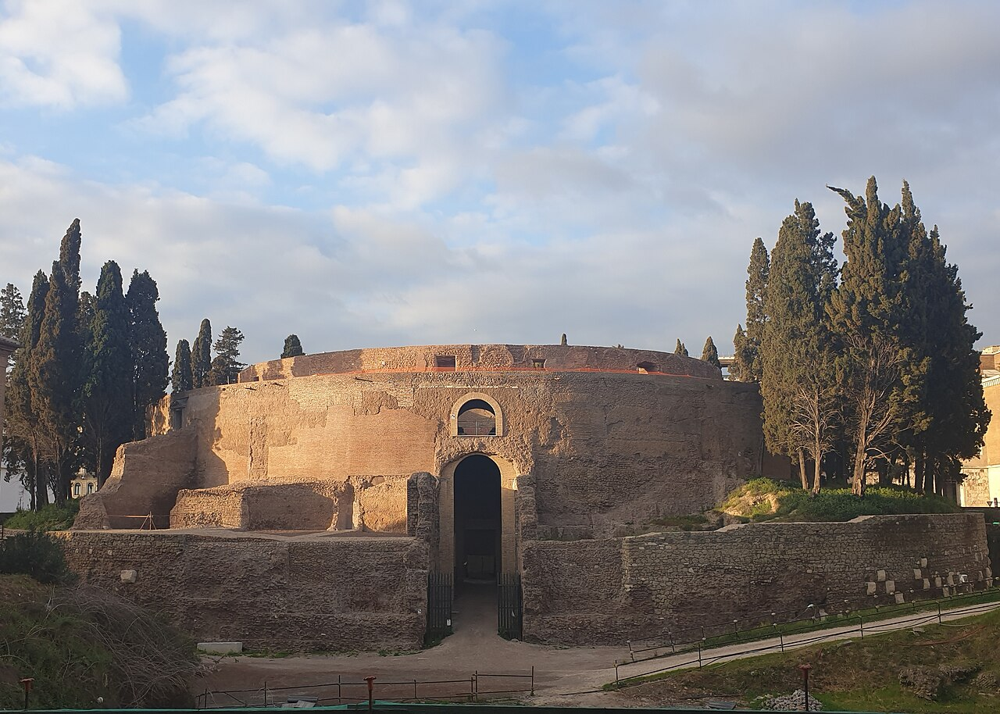
아우구스투스 영묘(Mausoleum Augusti) · 마르스 광장에 세워진 거대한 원형 영묘. 그가 BC 28년에 자기 손으로 직접 짓기 시작한 자기 무덤. 그 안에 그의 유골이 아내 리비아, 친구 아그리파, 누이 옥타비아, 자식들의 유골과 함께 묻혔다. 한 가족이 한 영묘에 모였다.
그가 임종 직전 베스타 신녀들에게 봉인된 네 두루마리를 맡겼다. 그 중 한 두루마리가 그의 손으로 쓴 자기 일대기 「행적록(Res Gestae Divi Augusti)」이었다. 그의 유언으로 그 본문은 그의 영묘 입구의 두 청동판 위에 새겨졌다. 그러나 그 영묘의 청동판은 7세기 약탈 어느 시점에 사라졌다. 본문은 잊혀졌다.
1555년 합스부르크 왕가의 페르디난트 1세가 보낸 사절단의 한 멤버였던 플랑드르 학자 오기에르 기셀랭 드 뷔스베크(Ogier Ghiselin de Busbecq)가 오스만 술탄 술레이만의 궁정으로 가던 길에 갈라티아(현 터키)의 한 도시 안카라(Ancyra)에 들렀다. 그 도시의 한 폐허, 옛 "아우구스투스와 로마 신전"의 벽에 라틴어와 그리스어로 병기된 한 거대한 비문이 천 오백 년을 그 자리에서 견디고 있었다. 뷔스베크는 수에토니우스의 일대기와 그 비문의 내용이 일치한다는 것을 알아챘다. 그는 일부를 베껴 자기 『튀르크 서간집(Turcicae Epistolae)』에 부록으로 실어 1581년 유럽에 처음 알렸다. 학계는 그것을 "Monumentum Ancyranum(앙카라 비문)"이라 불렀다. 19세기의 위대한 고전학자 테오도르 몸젠(Theodor Mommsen, 1817–1903)이 그 비문의 학술 정본을 완성했다. 한 도시의 한 황제가 자기 손으로 쓴 자기 일대기가 천 오백 년의 잠을 깨고 다시 읽혔다.
Marmoream se relinquere, quam latericiam accepisset.
나는 벽돌의 도시를 받아 대리석의 도시를 남겼다.
아우구스투스 (수에토니우스 『아우구스투스』 28장)
그것은 단순한 건축의 비유가 아니었다. 그는 한 공화국을 받아 한 제국을 남겼다. 그는 한 내전의 시대를 받아 한 평화의 시대를 남겼다. 그는 한 가난한 시인의 정원을 받아 한 문학의 황금기를 남겼다. 그가 시작한 그 평화 팍스 로마나(Pax Romana)가 그가 죽은 뒤 이백 년 동안 이어졌다. 마르쿠스 아우렐리우스의 죽음(AD 180)까지. 인류의 역사에 그렇게 긴 한 평화의 시간은 그 전에도 그 후에도 없었다.
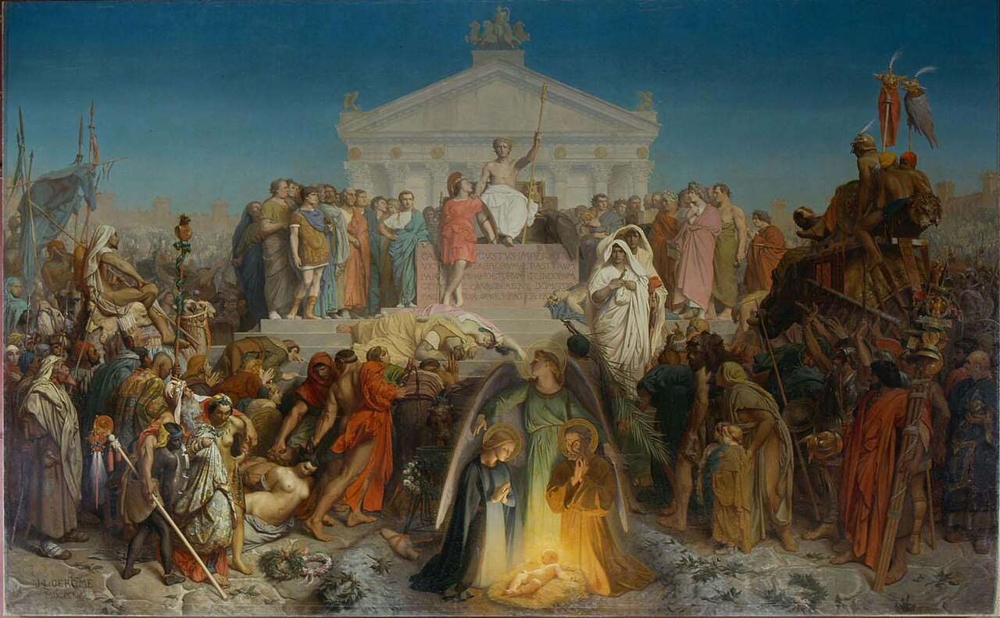
장-레옹 제롬, 「아우구스투스의 세기 — 그리스도의 탄생」(1855) · 19세기 회화. 한 그림 안에 두 세계가 만난다. 왼쪽 위에 아우구스투스가 황금 옥좌 위에 앉아 자기 시대의 모든 영광을 받아들이고 있고, 오른쪽 아래에 한 작은 가족이 한 아기를 안고 있다. 그 아기가 자기 시대를 시작할 것을 그는 알지 못했다. 그러나 그의 시대가 끝나기 위해 그 아기가 필요했다.
그의 후손이 다 그렇게 멋지게 다스리지는 못했다. 그가 후계로 남긴 의붓아들 티베리우스, 그 다음 칼리굴라, 그 다음 클라우디우스, 그 다음 네로. 율리우스-클라우디우스 왕조는 그가 죽은 지 쉰네 해 만에 네로의 자결로 끝났다. 그러나 그가 만든 정치 체제 원수정(Principatus)은 그 다음의 모든 황제들에게 그대로 이어졌다. 그가 한 도시의 한 통치 양식을 발명했고, 그 양식이 그 도시를 한 세계의 중심으로 만들었다.
아우구스투스 사망 시 그가 다스리던 영역
면적약 삼백육십만 km². 알렉산드로스가 정복한 영역의 약 칠십 퍼센트.
군단 수스물여덟 개(약 십오만 명의 정규군 + 보조 부대).
속주 수약 마흔 개. 동방의 시리아부터 서방의 히스파니아까지.
건설한 신전로마에만 여든두 개의 신전을 자기 손으로 복구하거나 신축.
통치 기간BC 27 – AD 14, 마흔한 해. 로마사의 최장 통치.
「행적록」 기록 자기 평가"나는 군대의 충성, 시민의 환호, 동맹의 자발성으로 다스렸다. 강제로 다스리지 않았다."
곁가지 — 한 영묘의 14년 잠 (2007–2021)
한 영묘의 운명은 영묘의 주인의 운명만큼 굴곡졌다. 7세기 동(東)고트의 약탈 어느 시점에 영묘 안의 모든 청동 그릇과 황금 부장품이 사라졌다. 그 약탈의 어느 시점에 아우구스투스 본인의 유골 항아리도 사라졌다. 우리는 그가 어디에 잠들어 있는지 모른다. 중세에는 영묘가 콜론나(Colonna) 가문의 요새가 되었다가, 르네상스에는 정원이 되었다가, 19세기에는 투우장이 되었다가, 20세기 초에는 음악당이 되었다. 무솔리니가 1936년 발굴 사업을 시작했으나 미완으로 끝났다.
2007년 이탈리아 통신사 TIM(텔레콤 이탈리아)의 약 천만 유로(약 백삼십억 원) 출연을 받아 로마시(市)와 문화부의 합동 복원 사업이 시작되었다. 열네 해의 작업 끝에 2021년 3월 1일 영묘가 열네 해 폐쇄 끝에 일반 공개되었다. 발굴의 과정에서 한 사실이 밝혀졌다. 영묘의 원래 형태는 흔히 알려진 원뿔형이 아니라 완전한 원기둥 형이었다는 것. 지름 약 팔십칠 미터, 인류 사상 가장 큰 원형 무덤. 두 천 년이 지난 뒤에야 우리가 그것의 진짜 모양을 알았다.
곁가지 — 8월(August)에 자기 이름을
그가 죽은 뒤 그러나 살아생전 BC 8년에 원로원은 한 해의 여덟째 달의 이름을 그의 이름을 따 "Augustus"로 바꾸었다. 그 달은 그가 알렉산드리아를 점령하고 이집트를 정리한 달이었다. 양아버지 카이사르가 일곱째 달(July)에 자기 이름을 새겼고, 양아들이 여덟째 달에 자기 이름을 새겼다. 두 부자(父子)의 이름이 우리가 지금도 매년 두 번씩 부른다. 흔히 떠도는 전설이 있다. 8월이 서른한 날인 이유는 아우구스투스가 카이사르의 7월(서른한 날)에 자기 8월이 서른 날밖에 안 되는 것을 못마땅해 2월에서 하루를 떼어와 서른한 날로 만들었다는 이야기. 그러나 사료적으로 이는 거짓이다. 8월의 서른한 날은 이미 BC 153년 이전의 로마력에서 확인된다. 아우구스투스가 태어나기 아흔 해 전이다. 권력자의 신화는 권력자가 죽은 뒤에도 자란다.
XV
사후 — 두 천 년의 거울
다른 시선 — 세계가 그를 기억하는 방식
강의 듣기
한 사람의 평가는 그가 살아 있을 때 끝나지 않는다. 그가 죽은 뒤 이천 년 동안 한 사람의 얼굴은 시대마다 다른 거울에 비치며 다시 자랐다.
베르길리우스의 「아이네이스」 — 한 시인이 새긴 한 황제
한 황제가 한 시인을 후원하고, 한 시인이 한 황제의 신화를 완성한 가장 큰 사례. 베르길리우스의 「아이네이스」는 단순한 서사시가 아니라 아우구스투스를 위해 쓰여진 한 가문의 족보였다. 트로이의 영웅 아이네아스가 자기 아들 이울루스를 통해 율리우스 가문의 시조가 되었다는 그 도식이, 한 시 안에서 신화가 되어 마지막 라틴어가 살아 있던 천 사백 년 동안 유럽의 모든 라틴어 학생이 외워야 할 행이 되었다. 베르길리우스가 임종 직전 자기 시를 불태우라 명령했으나 아우구스투스가 그것을 거두어 출판을 명령한 그 사실 자체가, 한 황제가 자기 시인의 마지막 결정을 거스를 만큼 그 시가 자기에게 필요했다는 증거다. 권력자가 시인의 마지막 의사를 거스를 때, 그 시는 권력자의 것이 된다.
리비우스의 『로마사』 — 황금기 사관
티투스 리비우스가 BC 27년경 시작한 백사십이 권의 거대한 『로마사(Ab Urbe Condita)』는 아우구스투스 본인이 즐겨 읽은 책이었다. 리비우스의 역사관은 단순했다. 로마 건국에서 카이사르까지의 모든 영광이 한 사람, 아우구스투스의 통치를 위한 예비였다는 것. 리비우스는 정치적 직위를 받은 적 없으나 황제의 부탁으로 황제의 양손자(클라우디우스, 후의 황제)에게 역사 교육을 했다. 한 시대의 가장 큰 역사책이 황제의 가정교사의 손에서 나왔다. 그 책의 사 분의 삼은 사라졌고, 남은 사 분의 일이 후대의 모든 로마 공화국 사관의 출발점이 되었다.
오비디우스의 추방 — 황금기의 그늘
「변신 이야기(Metamorphoses)」와 「사랑의 기술(Ars Amatoria)」을 쓴 시인 오비디우스는 황제의 후원을 잠시 받았으나, AD 8년 갑작스레 흑해 연안의 외딴 도시 토미스(현 콘스탄차, 루마니아)로 추방되었다. 그가 추방된 이유는 사료가 모호하다. 그가 「사랑의 기술」에서 황제의 도덕법(lex Iulia)을 가볍게 다룬 죄, 그리고 정확히 알 수 없는 한 사건(error) 때문이라고 오비디우스 자신은 적었다. 일부 학자들은 그가 황제의 손녀 율리아 더 영거의 추문에 어떻게 연루되었으리라 추측한다. 그는 토미스에서 죽을 때까지 열 해 동안 시집 「슬픔의 노래(Tristia)」와 「폰토스에서 온 편지(Epistulae ex Ponto)」를 써서 사면을 청했으나, 아우구스투스도 다음 황제 티베리우스도 끝내 그를 돌려보내지 않았다. 황금기에도 한 시인이 황제의 분노를 사면 추방을 면치 못했다. 그 추방이 한 시인의 가장 슬프고 가장 아름다운 시집을 낳았다는 것이, 역사의 한 아이러니였다.
누가복음의 한 줄 — 한 동방의 시선
그가 죽은 지 약 칠십 년 뒤, 한 그리스어로 쓴 복음서가 한 줄을 적었다. "그 시절에 가이사 아구스도로부터 칙령이 나서 천하로 다 호적하라 하였으니 이 호적은 구레뇨가 수리아 총독이 되었을 때에 처음 한 것이라."(누가복음 2:1–2) 한 황제의 인구조사 한 번이 동방의 한 작은 마을의 한 아기의 탄생 이야기의 배경이 되었다. 그 아기를 따른 사람들이 그 후 삼백 년에 한 제국의 종교를 갈아치웠다. 한 황제가 자기 손으로 만든 평화 위에서 자기를 끝내는 종교가 자라났다. 그것이 황제가 알지 못한, 그리고 알 수 없었을 가장 큰 아이러니다.
파르티아의 시선 — 한 외교의 황금기
로마사가 거의 모두 서방의 시선에서 쓰여졌지만, 동방의 시선도 있었다. BC 20년 아우구스투스가 한 세대 전 카르하이(BC 53)에서 크라수스가 잃어버린 로마 군단기를 외교 협상으로 돌려받은 그 사건을, 파르티아의 대왕 프라아테스 4세도 자기 사료에 적었다(파르티아 사료는 거의 사라졌으나 사산조 후대 페르시아 문헌에 단편이 남았다). 그에게 그 협상은 패배가 아니었다. 자기가 한 위협적인 서방 황제와 동등한 자격으로 마주 앉았다는 사실이 자기 권위의 증명이었다. 두 제국이 한 세대 전 한 학살의 기억을 한 외교 의례로 씻은 그 사건이, 그 후 이백 년의 로마-파르티아 평화의 토대가 되었다. 두 황제 모두 그 평화를 자기 업적으로 적었다. 한 사실이 두 권력자의 두 자기 신화의 양쪽 토대가 되는 것이 외교의 묘미다.
단테의 천국, 한 황제의 자리
14세기 초 단테 알리기에리는 『신곡 천국편』의 여섯 번째 하늘(목성, 정의의 별)에 한 자리를 아우구스투스를 위해 마련했다(『천국편』 6곡). "Pax Romana"의 평화가 그리스도의 탄생을 가능하게 했고, 그러므로 한 이교(異敎)의 황제가 신학적으로도 정의로운 영혼의 하늘로 인도되어야 한다는 것이 단테의 신학이었다. "Quel ch'è di l'aquila / regsse il mondo", 독수리의 깃발이 세계를 다스리던 그 자. 단테는 자기 시대의 황제(신성 로마 제국의 카를 4세)에게 아우구스투스의 정의를 권하기 위해 그 옛 황제를 자기 시의 한 별자리로 만들었다.
1937년 — 무솔리니의 도금
20세기 초 한 독재자가 한 옛 황제를 자기 거울로 삼았다. 베니토 무솔리니는 1937년 아우구스투스 탄생 이천 주년에 거대한 전시 "Mostra Augustea della Romanità"(아우구스투스 로마니타스 전시)를 로마에서 열어 백만 명 이상의 관람객을 끌었다. 같은 시기 그는 아우구스투스의 영묘 주변을 부분 발굴하고, 아라 파키스를 산 로렌초 일대에 흩어져 있던 파편들로 복원해 새 보호각 안에 옮겨 다시 세웠다. 무솔리니의 목표는 명확했다. "나는 새 아우구스투스다." 그러나 그가 모방하려 한 그 인물의 가장 큰 특질, 자기를 황제라 부르기 거부한 그 자제(自制)를 그는 한 번도 모방하지 못했다. 권력은 자기 이름을 부르면 망한다는 진리를, 무솔리니는 끝내 배우지 못했다. 그가 옮겨 세운 아라 파키스는 2006년 미국 건축가 리처드 마이어의 유리 보호각으로 다시 옷을 입었다.
1939년 — 로널드 사임의 그림자
1939년 옥스퍼드의 한 뉴질랜드 출신 고전학자 로널드 사임(Ronald Syme)은 『로마 혁명(The Roman Revolution)』이라는 한 책을 출판했다. 한 도시의 한 정치 체제가 어떻게 한 사람의 손에 떨어졌는지를 인물학적으로 분석한 그 책은 모든 후대 로마사 학계의 정전(正典)이 되었다. 사임의 결론은 한 문장으로 요약된다. "왕정이 한 단어 외에는 모든 것을 회복했다(monarchia was restored in all but name)." 그가 그 책을 출판한 해는 우연이 아니었다. 같은 1939년 유럽의 한 다른 독재자가 다른 나라의 의회를 한 사람의 손 아래 두려 하고 있었다. 사임은 자기 시대의 한 거울을 한 옛 황제의 얼굴에서 찾았다. 황제가 죽고 이천 년이 지나도 그는 자기 시대의 정치의 한 자(尺)였다.
1976년 BBC 「나, 클라우디우스」 한 여인의 다른 얼굴
로버트 그레이브스의 1934년 소설 『나, 클라우디우스(I, Claudius)』를 1976년 BBC가 열두 부작 TV 드라마로 만들었다. 영국 시청자 약 천 이백만 명이 본 그 드라마에서 리비아 역을 맡은 웨일스 출신의 배우 시안 필립스(Siân Phillips)가 영국 TV 아카데미상(BAFTA) 여우주연상을 받았다. 그녀가 연기한 리비아는 한 시대의 모든 음모를 한 침실에서 지휘하는 차갑고 절제된 권력자였다. 카시우스 디오의 음모설을 한 작가가 한 소설로 키웠고, 한 드라마가 한 배우의 한 얼굴로 영원히 박았다. 후대의 모든 리비아의 얼굴은 1976년의 시안 필립스의 그 차가운 미소를 따라 그려졌다.
리처드 마이어의 유리집 — 2006년의 아라 파키스
무솔리니가 1938년 콘크리트와 대리석으로 세운 아라 파키스의 첫 보호각이 일흔 해를 못 견디고 균열이 갔다. 2006년 미국 건축가 리처드 마이어(Richard Meier)가 새 보호각을 설계해 완공했다. 흰 트래버틴과 유리의 모더니즘 양식. 로마의 한 시민단체가 반대 시위를 했고 "중세 도시 한 가운데의 미국식 주유소"라는 풍자가 신문에 돌았다. 그러나 그 유리 보호각 안에서 아라 파키스의 부조가 자연광을 받아 이천 년 만에 처음으로 자기 본래의 색조를 보이기 시작했다. 한 황제의 평화의 제단이 한 미국 건축가의 손으로 다시 한 시대의 시민에게 보였다.
도판 모음 — 시대의 시선
아우구스투스를 그려온 다양한 시대·문화의 손길. 프리마 포르타 석상의 표준 도상에서 르네상스 알레고리까지.